The York-Toronto-Helsinki Parsed Corpus
of Old English Prose
YCOE Lite: A beginner's guide
Ann Taylor, University of York
March 2003
Introduction
The York-Toronto-Helsinki Parsed Corpus of Old English Prose, or York
Corpus of Old English (YCOE) for short, is part of the English parsed corpora series. It is
the third historical corpus to be completed in this format and follows the
same kind of annotation scheme as its sister corpora, the Penn-Helsinki Parsed Corpus of
Middle English II (PPCME2) and York-Helsinki
Parsed Corpus of Old English Poetry. Current users of the PPCME2 will
find many familiar things here, but there are some differences. The biggest
difference is due to the inflected nature of Old English which required a
number of changes to the annotation. We've also made some changes to
facilitate searching, based on our experience using the PPCME2. This manual
introduces the general principles of the annotation scheme and gives a
brief introduction to the major constructions in the corpus and how they
are annotated. It does not assume knowledge of the PPCME2 although for
users already familiar with that corpus it does try to flag some
similarities and differences.
This is not a reference manual but is intended as a fairly short, readable
introduction to the annotation system. In addition to orienting the user to
the general principles of annotation and the major constructions found in
the corpus, it highlights aspects of the system that it is necessary to
understand in order to search effectively for virtually any construction.
The Reference manual should be consulted for
details on individual constructions.
Although the general annotation principles are essentially the same as
those of the PPCME2, there are some differences. Users familiar with the
PPCME2 should read the section PPCME2 users
which summarizes the major differences between the two corpora.
Goals
The main goal of the corpus is to facilitate automatic searching for
syntactic constructions (using CorpusSearch), not to
give a correct linguistic analysis of each sentence. There is a slight
theoretical bias in the annotation toward earlier versions of generative
(X-bar) syntax in the choice of names for labels and some ways of
representing relations (the use of traces, for instance). This follows
partly from the history of these corpora as part of the Penn Treebank
tradition, and partly from our conviction that this is a widely recognized
system, and for parsing in tree format, a very useful one. That said, we
have felt no compunction to remain true to any particular aspect or version
of the theory but have focused our efforts on creating a useful annotation
system. Although we have tried within the bounds of time and money to
annotate as much as possible in as linguistically valid a way as possible,
it cannot be stated too strongly that the annotation system may not reflect
in a direct way what individual linguists know is true about the language
or even what is accepted as fact in the community of scholars. For
instance,
-
- We do not use a VP node in the corpus because the surface order of the
VP in Old English is still in flux and determining the boundaries of this
node would be difficult and time-consuming. The result of this decision is
that the verb (or verbs) and all its arguments, both subjects and
complements, are sisters, directly dominated by the sentential node,
IP. While this is not a good linguistic analysis, it makes searching for
different orders of sentential elements very easy.
( (IP-MAT-SPE (NP-NOM (PRO^N he)
(ADJP-NOM (ADJ^N sylf)))
(VBPI forgif+d)
(NP (N mihte) (CONJ and) (N streng+de))
(NP-DAT (PRO$ his) (N^D folce))
(. ;)) (ID copreflives,+ALS_[Pref]:19.11))

- We represent what is traditionally known as subject-aux inversion or
verb-to-complementizer movement, which is a feature of direct questions,
yes/no questions, and V1 conditionals, by the lack of a complementizer
position, an otherwise required element of every CP. Again this is not a
linguistic analysis. Actually including the verb in the CP-layer would
cause various problems for parsing and searching so we simply represent
this structure in a different, but easily recognizable way.
(CP-REL (WNP-ACC-1 (WPRO^A +tone)) <-- structure of a relative clause
(C 0) with empty complementizer position
(IP-SUB ...) ) represented
(CP-QUE (WNP-ACC-1 (WPRO^A hw+at)) <-- direct question with no
(IP-SUB ...)) complementizer position
(CP-QUE (IP-SUB ...)) <-- yes/no question
(CP-ADV (IP-SUB ...)) <-- V1 conditional
- Many adverbials consist of a preposition (subordinating conjunction)
with a clausal complement (before she came, if she
goes). Representing this directly in the parsing, as in example (a),
however, makes it difficult to access the preposition when searching since
it is outside the CP node. For this reason we include the preposition
inside the CP, as in example (b).
example (a)
(PP (P before) <-- a reasonable linguistic analysis
(CP-ADV (C 0)
(IP-SUB she came))
example (b)
(CP-ADV (P before) <-- an easily searchable structure
(C 0)
(IP-SUB she came))
- In order to save time we do not always include structure that is
completely predictable. For instance, in example (a), the unmodified ADJ is
not dominated by a phrasal ADJP node, while in example (b) the modified ADJ
is. This is because in example (a) the boundaries of an ADJP, if included,
and its relationship to the other members of the NP would be completely
predictable, that is, they would be exactly the same as the boundaries and
relationship of the ADJ. In example (b), on the other hand, this is not the
case. Here the ADJP serves to indicate that the ADV and ADJ are sisters,
and the ADJP is sister to the N.
example (a)
(NP (D the) (ADJ tall) (N girl))
example (b)
(NP (D the)
(ADJP (ADV very) (ADJ tall))
(N girl))
As these examples illustrate, it is necessary to invest some time and care
in order to understand how the annotation system works. The corpus and its
search engine CorpusSearch are
simply tools, and as with all tools, if poorly used, will produce poor
results.
*Disclaimer*
No aspect of the annotation system nor the inclusion or exclusion of any
particular construction in it should be taken in any way as an indication
of the beliefs of the authors about the syntax of Old English. The corpus
and all associated documentation are for practical purposes only.
A note on the examples
The examples in the manual have been taken from the corpus but may have
been lightly edited in some cases for pedagogical purposes. The examples
which begin with "(NODE" are partial tokens extracted from the corpus with
CorpusSearch. The
manual was completed before the corpus itself, and in some cases further
changes to the corpus may have resulted in the token numbers on the
examples differing from those in the corpus. Please do not use examples
from the manual without checking them.
The text of the corpus is that of the Dictionary of Old English, Old
English Corpus. Errors have been silently corrected; any other
alterations to the text are indicated by comments. Many of these texts are still in
copyright. Please ensure that your use of the texts in any published
material does not contravene copyright law. The copyright of the annotated
corpus resides with the University of York, and of all supporting
documentation with Ann Taylor and the University of York.
Glossary
The following terms are commonly used in the YCOE documentation and may have
specific meanings within the YCOE annotation scheme which differ from other
usages. Words in boldface are themselves defined elsewhere in the glossary.
- ambiguous for case
- a lexical form is ambiguous for case if it is formally ambiguous in
isolation; dat/gen ambiguous means a form is formally identical in the
dative and genitive
- case-marked or case-labelled
- case-marked or labelled refers
to the addition of case in the annotation, not to any property of a lexical
item; lexical items are referred to as (un)inflected, (un)declined, etc.
- extended label
- an extended label is an addition to the first (usually formal) part of
the label which is attached to it by a hyphen; there may be multiple
extended labels (e.g., NP-NOM-PRD, CP-FRL-LOC, etc.)
- immediately dominate
- a node immediately dominates another (or a word) if there is no
intervening node between the two
- label
- a label is the set of letters following an open
parenthesis, which indicates the type of constituent; a word-level label
may also be referred to as a tag (NP-NOM ...)
- level
- a constituent is referred to as occurring or appearing at X-level,
where X is the constituent that immediately dominates it (e.g. IP-level,
phrasal level); level may also be used to refer to a class of constituents,
as for example, word-level (also POS level) constituents
- node
- node is a way of referring to a pair of labelled parentheses when
thinking of it in terms of tree structure (a pair of labelled parentheses
represents a node in a tree structure); it is often used interchangeably
with phrase
- phrase/phrasal
- used in a narrow sense to refer to the
intermediate level of constituents between word (POS) level
(N/ADJ/etc.) and clausal level (IP/CP), that is, NP, ADJP, ADVP, etc.; in a
wider sense it refers to a pair of labelled parentheses (especially in the
term "project a phrase")
- POS
- part-of-speech; POS tags or labels are
attached to the first set of parentheses surrounding a word (e.g., (PRO^N
he))
- project a phrase
- a head projects a phrase if it is immediately dominated by a
phrase of the appropriate category (N projects an NP); whether a
head does or does not project a phrase is a statement about how the parsing
system works and not a theoretical statement about the phrase structure of
Old English
- specXP
- where XP is some constituent category (specPP, specCP, etc.); this term
is used rather loosely to refer to a position immediately preceding the
head of the XP; it is a notational device within the YCOE/PPCME2 system and
should not be interpreted in any particular case as a linguistically
valid analysis
- tag
- part-of-speech tag; often referred to as a word-level label
- *
- the asterisk * is a wild card used by CorpusSearch, the
search-engine created for the corpus; it matches zero or more characters or
digits
- #
- the number/pound sign is a wild card used by CorpusSearch, the
search-engine created for the corpus; it matches one or more digit
Tokens
The texts in the corpus are divided into tokens. A token consists most
basically of one main verb (or verb sequence) with all associated arguments
and adjuncts. The majority of tokens therefore are matrix IPs (IP-MAT), but
they may also be CPs (e.g., direct questions CP-QUE). When a constituent
smaller than the clause is used as a complete utterance (as for example, in
answer to a question Where did you go? To the beach) it constitutes
its own token. Each token is enclosed in a "wrapper", a pair of unlabelled
parentheses. The wrapper contains minimally the parsed text, a unique ID
node to identify the token, which includes the filename, the Dictionary of
Old English (DOE) short title for the text, and some way of finding the
token in the text (page or line number, for instance). The Dictionary of
Old English identifiers are included in the text at the point that they
occur in the original. Generally this coincides with the beginning of a
token, in which case the identifier is included in the wrapper.
( (CODE <T03010000800,25>) <-- Dictionary of Old English identifier
(IP-MAT (NP-NOM (NUM^N An) (N^N woruldcynincg)) <-- parsed text (IP-MAT)
(HVPI h+af+d)
(NP-ACC (NP (Q fela)
(NP-GEN (N^G +tegna)))
(CONJP (CONJ and)
(NP-ACC (ADJ^A mislice) (N^A wicneras))))
(. ;)) (ID copreflives,+ALS_[Pref]:25.14)) <-- ID node
( (CODE <T03050005900,159>)
(CP-QUE-SPE (WADVP-1 (WADV Hu)) <-- CP-QUE token
(IP-SUB-SPE (ADVP *T*-1)
(MDP mage)
(NP-NOM (PRO^N we)
(ADJP-NOM (ADJ^N blinde)))
(NP-ACC (D^A +tone) (ADJ^A blindan))
(VB geh+alan))
(. ?)) (ID coaelive,+ALS_[Julian_and_Basilissa]:159.1034))
( (CODE <T02190003900,283.79>)
(CP-QUE (WADVP-1 (WADV Hwi))
(IP-SUB (ADVP *T*-1)
(MDD wolde)
(NP-NOM (NPR^N God))
(BE beon)
(VBN acenned)
(PP (P of)
(NP-DAT (VBN^D beweddodan) (N^D m+adene))))
(. ?)) (ID cocathom1,+ACHom_I,_13:283.79.2423))
( (PP (PP (P For) <-- PP token (answer to question)
(NP-DAT (Q^D miclum) (N^D gesceade)))
(, .)
(CONJP (CONJ &) (ADV eac)
(PP (P for)
(NP (N neode))))
(. .)) (ID cocathom1,+ACHom_I,_13:283.79.2424))
In the first and last tokens in the examples above, the ID labels are
decomposed as follows:
filename copreflives cocathom1
short title +ALS_[Pref] +ACHom_I,_13
line number 25 page 283, line 79
token number 14 2424
How the token is identified in the text (i.e., by page, line, etc.) follows
the Dictionary of Old English system for that text. Occasionally we have
added additional information (usually page numbers) when the information
provided is not sufficient to allow the token to be located easily.
Labels
Formal labels
The annotation scheme uses a limited tree representation in the form of
labelled parentheses. Each set of parentheses represents a constituent. The
open parentheses have an associated label, identifying the constituent as
either a phrase label (CP, IP, NP, ADJP, etc.) or a word label (also
called a part-of-speech (POS) tag) (N, ADJ, etc.). The initial part of the
label provides formal information (i.e., part of speech (N, ADJ, etc.) or
type of phrase (NP, etc.), and for inflecting categories, case (NP-NOM =
nominative NP, N^N = nominative noun, etc.)) while further labels, if
present, generally provide functional information (-LFD = left-dislocated,
-PRD = predicate, etc.). The punctuation of the text is included in the
corpus as a labelled item, but is normally ignored by CorpusSearch, along
with other metalinguistic elements of the parse such as comments, when
searching. It is, therefore, omitted from all illustrative trees included
in this manual. A typical parse in tree form looks like this.
(IP-MAT (NP-NOM (PRO^N Hi))
(MDDI sceoldon)
(ADVP-TMP (ADV^T +ta))
(RP+VB underhnigan)
(NP-DAT (ADJ^D nacodum) (N^D swurde))
(. ,))
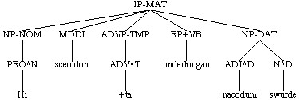
The major part-of-speech categories are given in the following table. For a
complete list, see the Complete label
list. More details about these categories are given in the Part-of-speech Manual.
N common noun PRO pronoun
NR proper noun PRO$ possessive pronoun
MAN indefinite "man"
WPRO wh-pronoun WADV wh-adverb
WADJ wh-adjective WQ WHETHER
ADJ, ADJR, ADJS adjective, comparative adj., superlative adj.
Q, QR, QS quantifier, comparative quant., superlative quant.
ADV, ADVR, ADVS adverb, comparative adv., superlative adv.
CONJ conjunction RP adverbial particle
C complementizer FP focus particle
D determiner FW foreign word
P preposition INTJ interjection
NEG negation NUM number
labels beginning with:
BE forms of the verb BE (e.g. BEPI, BEDI, etc.)
HV the verb HAVE (HVPI, HVDI, etc.)
AX auxiliary verbs (AXPI, AXDI, etc.)
MD modal verbs (MDPI, MDDI, etc.)
VB all other verbs (VBPI, VBDI, etc.)
The labels above may be extended by case (for inflecting categories) or
adverbial functions (for adverbial categories). Note that although both
dative and directional are indicated by ^D, there is no confusion since
they are attached to different initial labels.
^N nominative ^T temporal
^A accusative ^L locative
^G genitive ^D directional
^D dative
^I instrumental
Note that adverbs (ADV), quantifiers (Q) and all types of verbs and modals
may have pre-cliticized negation, in which the negation label NEG is joined
to the label for the rest of the word with a plus sign.
NEG+ADV na
NEG+ADV^T n+afre
NEG+Q naht
NEG+BEDI n+aron
NEG+HVD n+afde
NEG+MDD nolde
Particles attached to the front of verbs are treated the same way.
RP+VBDI underfengon
RP+VBPI oferdrif+d
RP+VBD foresceawode
RP+VBN^A fores+ade
RP+VAG onwinnende)
The major phrasal labels are given in the following table (for a complete
list, see the Complete label list). The
structure and use of these constituents is discussed further below.
CP complementizer phrase (= SBAR)
IP inflection phrase (= S)
PTP participial phrase
NP noun phrase WNP wh-NP
ADJP adjective phrase WADJP wh-ADJP
QP quantifier phrase WQP wh-QP
ADVP adverb phrase WADVP wh-ADVP
PP prepositional phrase WPP wh-PP
CONJP conjunction phrase
As at word-level, phrases may be labelled for case.
-NOM nominative
-ACC accusative
-GEN genitive
-DAT dative
Function labels
The initial part of a label is formal (i.e., identifies part-of-speech (N,
ADJ, etc.) or type of phrase (NP, ADJP, etc.)), followed immediately by
case for the appropriate categories. This part of the label may then be
followed by one or more function labels.
All IPs and CPs are identified by type. Therefore there is no simple IP or CP
label in the corpus, they always have an extended label identifying them
further.
IP-MAT matrix IP
IP-SUB subordinate IP (i.e., dominated by CP)
IP-SUB-CON conjunct subordinate clause
IP-INF complement infinitive
IP-INF-NCO non-complement infinitive
IP-INF-ABS infinitival absolute
IP-SMC small clause
CP-ADV adverbial
CP-CAR clause-adjoined relative
CP-CLF cleft
CP-CMP comparative
CP-DEG degree complement
CP-EOP infinitival relative/purpose clause with gap
CP-FRL free relative
CP-QUE question
CP-REL relative
CP-THT that-complement
Outside of CP and IP, phrases may or may not have function labels. The lack
of a function label on NPs, for instance, generally indicates that they are
arguments. In this section are listed the various function labels that
apply to phrases (NP, QP, ADVP, etc.).
-ADT adjunct
-DIR directional
-EXT extent
-LFD left-dislocation
-LOC locative
-PRD predicate
-PRN appositive or parenthetical
-RFL reflexive
-RSP resumptive
-SPE direct speech
-SBJ non-nominative subject
-TMP temporal
-VOC vocative
Case
While case is a fully productive category in Old English, many case forms
are formally ambiguous, and sometimes remain ambiguous even in context. Our
basic approach to indicating case in the corpus is to mark it when it
is clear, but not when it is ambiguous, or potentially ambiguous, tempered
by considerations of the effort involved and the needs of the system as a
whole.
At word-level case is indicated by a label attached to the main formal
category label (N, ADJ, D, etc.) with a carat ^.
nominative N (N^N, ADJ^N, D^N, etc.)
accusative A (N^A, ADJ^A, D^A, etc.)
genitive G
dative D
instrumental I
The following parts of speech may be labelled for case:
-
- nouns
- adjectives
- quantifiers
- determiners
- numbers
- participles
The following items are never labelled for case:
-
- present participles in -e (LIFIGENDE) and past participles with no
overt inflection (GERIDEN) when part of the main verb
sequence
- uninflected cardinal numbers above three
- the undeclinable quantifiers MA, LYT, FELA, L+AS
- 3rd person possessive pronouns (HIS, HIRE, HEORA)
Case is labelled on words and phrases in the following circumstances:
-
- when the case is morphologically unambiguous; that is, when it is
apparent from the lexical item in isolation (e.g. datives in -UM, genitives
in -RA or -ENA, accusatives in -NE, most determiners, etc.)
(N^D handum) <-- unambiguous dative in isolation
(N^G halgena) <-- unambiguous genitive in isolation
(D^A +disne) <-- unambiguous accusative in isolation
- when at least one word in a constituent is lexically unambiguous for
case, all other words in the same constituent inherit its case, whether
they themselves are ambiguous or not (e.g. SIGE is nom/acc/dat ambiguous in
the singular, but in +TONE SIGE it is labelled accusative because of
+TONE); but note that different rules apply for instrumental case.
(NP-ACC (D^A +tone) (ADJ^A h+a+denan) (N^A wogere))
--> h+a+denan and wogere are ambiguous in isolation, but +tone is not
(NP-ACC (D^A +ta) (N^A anlicnyssa))
--> anlicnyssa is acc/gen ambiguous, but +ta can only be accusative
(NP-DAT (Q^D mycclum) (N^D geleafan)
(NP-DAT (D^D +dam) (ADJ^D bysmorfullum) (N^D h+a+denscype)
- a constituent ambiguous for case inherits case from an unambiguously
marked conjoined constituent (e.g. in METE & DRINC in non-subject use,
DRINC is unambiguously accusative, while METE is acc/dat ambiguous, but
would be labelled accusative, inheriting this case from DRINC)
(NP-ACC (N^A cristendom) (CONJ and) (N^A cl+annysse))
--> CL+ANNYSSE is acc/gen/dat ambiguous, but CRISTENDOM is acc
(NP-ACC (N^A gyfernesse) (CONJ and) (N^A forlygr) (CONJ and) (N^A gitsunge))
--> GYFERNESSE and GITSUNGE get acc. case from FORLYGR
(NP-ACC (N^A gemynd) (CONJ and) (N^A andgit) (CONJ and) (N^A wyllan))
--> WYLLAN gets acc. case from GEMYND and ANDGIT
- a constituent ambiguous for case inherts case from an unambiguously
marked appositive and vice versa
--> both EUGENIAN and D+AHTER are ambiguous, but get dative case from
+TAM HALGAN M+ADENE
(NP-DAT (D^D +tam) (ADJ^D halgan) (N^D m+adene)
(NP-DAT-PRN (NPR^D Eugenian))
(, ,)
(NP-DAT-PRN (NP-GEN (NPR^G Philyppus))
(N^D d+ahter)))
In addition,
-
- Nominative is marked on any word which is part of the subject of a
tensed clause (apart from words which are never labelled for case);
accusative is marked on the subject of infinitives and small clauses (apart
from a small number of small clause cases where the matrix verb doesn't
take accusative). All subject NPs in finite clauses are labelled -NOM, even
if the word(s) they dominate are not labelled for case.
(NP-NOM (Q^N Ealle) (D^N +ta) (ADJ^N geleaffullan) (N^N f+aderas))
(NP-NOM (Q f+ala) <-- NP labelled -NOM as subject although
(NP-GEN (N^G cnihta))) f+ala is never labelled for case
- A noun standing in relation to another noun is assumed to be genitive
unless its form makes this impossible.
(NP (NP-GEN (NUM^G anre) (N^G culfran)) <-- formally gen/dat ambiguous,
(N anlicnysse))) labelled gen. in relation
to another noun
- For the most part the complements of verbs and prepositions are
labelled for case based on their forms, not taking into account the case
taken by the verb or preposition. Thus if a complement could be accusative
or dative based on its form, and the verb/preposition only takes
accusative, it is nevertheless treated as ambiguous and left
unlabelled. There are some complications regarding verbs/prepositions
taking the genitive, for which see POS Manual: Ambiguities among oblique
cases.
( (IP-MAT-SPE (NP-NOM (PRO^N Ic))
(ADVP (ADV so+tlice))
(PP (P on)
(NP (N +al+teodignesse))) <-- prep takes acc or dat
(NP (N anxsumnysse)) <-- verb takes acc
(VBP +trowige)
(. .))
(ID coeust,LS_8_[Eust]:199.207))
Decisions about case are based on the gender of the noun as listed in Clark
Hall (A Concise Anglo-Saxon Dictionary, Fourth Edition, 1960). Nouns listed
with more than one gender are treated as ambiguous if the noun would be
ambiguous in that form under any of the listed genders. Therefore a
singular noun in -E listed as mf (masculine or feminine) will be treated as
ambiguous and unlabelled for case rather than being labelled dative (as it
would be if it were masculine). Note that this is done regardless of the
usage of the noun in any particular text; that is, if a noun listed as mfn
in Clark Hall is always (where it is possible to tell) masculine in some
particular text, it is still treated as ambiguous in any context
where it would be ambiguous if it were feminine. In practice this usually
means that any noun which includes feminine in its possible genders is
treated as feminine, since feminines are ambiguous in more contexts than
masculines or neuters.
Although number is not labelled on nouns in our system, number may affect
the assignment of case since the range of possible ambiguities is often
different in the singular and plural. When the number of a noun is not
clear from its form alone, it is taken from the translation (if there is
one) or context. If it is not possible to determine the number this may
affect the labelling of case since more ambiguities exist if number is not
known.
More details can be found in the section on case in the Part-of-speech manual.
The structure of IP
The basic unit of the corpus is the token. A token generally contains a
main clause, along with all its dependent clauses, although occasionally it
will contain a smaller constituent or a normally subordinate clause, used
as a complete "utterance" by the author of the text. We'll start by looking
at the structure of IP which is the constituent label for clauses. If the
clause is independent (a matrix IP) it is labelled IP-MAT, while if it is
subordinate (dominated by a CP node) it is labelled IP-SUB. The internal
structure of these two types is the same.
The tree notation (in the form of hierarchical labelled parentheses) which
is used to represent structure in the corpus is heavily underspecified;
that is, the number of levels of structure included is quite limited and
certain types of phrases are not included at all, with the result that the
trees are multiply branching and quite flat. The most obvious example of
this is the lack of a VP node. Within the IP all verbs and arguments of the
verb (both internal and external, i.e., both subject and complements), as
well as all adjuncts, are immediately dominated by the IP with no
intervening phrasal node.
( (IP-MAT-SPE (NP-NOM (PRO^N he)
(ADJP-NOM (ADJ^N sylf)))
(VBPI forgif+d)
(NP (N mihte) (CONJ and) (N streng+de))
(NP-DAT (PRO$ his) (N^D folce))
(. ;)) (ID copreflives,+ALS_[Pref]:19.11))
( (CODE <T03020000600,11>)
(IP-MAT (NP-NOM (D^N +Ta) (ADJ^N iudeiscan))
(VBDI axodon)
(NP-ACC (NPR^A Crist))
(CP-QUE (WNP-NOM-1 (WPRO^N hw+at))
(C 0)
(IP-SUB (NP-NOM-PRD *T*-1)
(NP-NOM (PRO^N he))
(BEDS w+are)))
(. .)) (ID coaelive,+ALS_[Christmas]:11.8))
( (CODE <T03030003900,131>)
(IP-MAT (NP-NOM (PRO^N Heo))
(VBD aflygde)
(ADVP (ADV eac))
(ADVP (ADV swylce))
(NP-ACC (D^A +ta) (ADJ^A fulan) (N^A deofla))
(PP (P fram)
(NP-DAT (RP+VBN^D ofs+attum) (N^D mannum)))
(PP (P +turh)
(NP-ACC (ADJ^A so+dne) (N^A geleafan)))
(. .)) (ID coaelive,+ALS_[Eugenia]:131.267))
Within the IP certain word-level categories may be immediately dominated by
IP with no intervening phrasal node. These are all verbs, finite and
non-finite, particles (RP, FP), sentential conjunctions (CONJ), negation
(NEG) and single-word interjections (INTJ). All other constituents of the
IP are phrasal.
( (IP-MAT (CONJ ac) <-- sentential conjunction
(NP-NOM (PRO^N hi))
(NEG ne) <-- negation
(BEPI synd) <-- finite verb
(ADVP (NEG+ADV na))
(NP-NOM-PRD (NUM^N +treo) (N^N anginnu))
(. ,)) (ID coaelive,+ALS_[Christmas]:16.16))
 ( (CODE <T03040010200,349>)
(IP-MAT (NP-NOM (PRO^N Hi))
(VBDI eodon) <-- finite verb
(ADVP-TMP (ADV^T +ta))
(RP in) <-- adverbial particle
(, ,)
(PTP-NOM (NP-ACC (D^A +tone) (ADJ^A +almihtigan))
(VAG^N herigende))
(. ,)) (ID coaelive,+ALS_[Basil]:349.684))
( (CODE <T03020006000,133>)
(IP-MAT (CONJ And) <-- sentential conjunction
(PTP-NOM (ADVP (ADV swa))
(VAG^N styrigende))
(BEPI is) <-- finite verb
(NP-NOM (D^N seo) (N^N sawul))
(CP-ADV (C +t+at)
(IP-SUB (NP-NOM (PRO^N heo))
(FP fur+don) <-- focus particle
(PP (P on)
(NP-DAT (N^D sl+ape)))
(NEG ne) <-- negation
(VBPI gestyl+t)))
(. ;)) (ID coaelive,+ALS_[Christmas]:133.106))
(CODE <T03030012600,406>)
(IP-MAT (ADVP-TMP (ADV^T +Ta))
(VBDI cw+a+d)
(NP-NOM (D^N se) (N^N h+alend))
(PP (P to)
(NP-DAT (D^D +dam) (ADJ^D halgan) (N^D m+adene)))
(, ,)
(IP-MAT-SPE (INTJ Eala) <-- interjection
(NP-NOM-VOC (PRO^N +du)
(NP-NOM-PRN (NPR^N Eugenia)))
(, ,)
(NEG ne) <-- negation
(BEPH beo)
(NP-NOM (PRO^N +tu))
(VBN afyrht))
(. .)) (ID coaelive,+ALS_[Eugenia]:406.436))
( (CODE <T03040010200,349>)
(IP-MAT (NP-NOM (PRO^N Hi))
(VBDI eodon) <-- finite verb
(ADVP-TMP (ADV^T +ta))
(RP in) <-- adverbial particle
(, ,)
(PTP-NOM (NP-ACC (D^A +tone) (ADJ^A +almihtigan))
(VAG^N herigende))
(. ,)) (ID coaelive,+ALS_[Basil]:349.684))
( (CODE <T03020006000,133>)
(IP-MAT (CONJ And) <-- sentential conjunction
(PTP-NOM (ADVP (ADV swa))
(VAG^N styrigende))
(BEPI is) <-- finite verb
(NP-NOM (D^N seo) (N^N sawul))
(CP-ADV (C +t+at)
(IP-SUB (NP-NOM (PRO^N heo))
(FP fur+don) <-- focus particle
(PP (P on)
(NP-DAT (N^D sl+ape)))
(NEG ne) <-- negation
(VBPI gestyl+t)))
(. ;)) (ID coaelive,+ALS_[Christmas]:133.106))
(CODE <T03030012600,406>)
(IP-MAT (ADVP-TMP (ADV^T +Ta))
(VBDI cw+a+d)
(NP-NOM (D^N se) (N^N h+alend))
(PP (P to)
(NP-DAT (D^D +dam) (ADJ^D halgan) (N^D m+adene)))
(, ,)
(IP-MAT-SPE (INTJ Eala) <-- interjection
(NP-NOM-VOC (PRO^N +du)
(NP-NOM-PRN (NPR^N Eugenia)))
(, ,)
(NEG ne) <-- negation
(BEPH beo)
(NP-NOM (PRO^N +tu))
(VBN afyrht))
(. .)) (ID coaelive,+ALS_[Eugenia]:406.436))
The minimal contents of a complete IP-MAT or IP-SUB are a subject and a
finite verb (for non-finite IPs, see Non-finite
IPs). If an overt subject is not present in the text, an empty one of
the appropriate type is added. The most common empty subject is a subject
elided under conjunction (NP-NOM *con*). The other types are expletive
subjects and "pro" subjects (for details, see Empty
subjects).
( (CODE <T03030012500,403>)
(IP-MAT (CONJ Ac)
(NP-NOM (D^N se) (N^N h+alend)) <-- overt subject
(VBDI com)
(PP (P mid)
(NP-DAT (ADJ^D heofonlicum) (N^D leohte)))
(. ,)) (ID coaelive,+ALS_[Eugenia]:403.433))
( (IP-MAT (CONJ and)
(NP-NOM *con*) <-- subject elided under conjunction, same
(VBD brohte) referent as subject of previous clause
(NP-DAT (D^D +dam) (N^D m+adene))
(NP-ACC (ADJ^A m+arne) (N^A bigleofon)
(, ,)
(NP-ACC-PRN (ADJ^A snawhwitne) (N^A hlaf)))
(. ,)) (ID coaelive,+ALS_[Eugenia]:403.434))
(NODE (IP-SUB (NP-NOM *exp*) <-- empty expletive subject
(NP-DAT (PRO^D him)) with impersonal verb
(VBPI lyst))
(ID coaelive,+ALS_[Christmas]:56.46))
Although all arguments are sisters of the verb, the subject is always
distinguishable from the other arguments. Thus in copular constructions,
where the subject and predicate are generally both nominative, the
predicate has an extended label -PRD (predicate) to distinguish it from the
nominative which is the subject. Likewise, in infinitives and small clauses
where both subject and predicate/object are commonly accusative, the
subject NP is distinguished by an extended label -SBJ.
( (CODE <T03020003300,73>)
(IP-MAT (NP-NOM (D^N Seo) (N^N sunne) <-- subject
(CP-REL (WNP-NOM-1 0)
(C +te)
(IP-SUB (NP-NOM *T*-1)
(RP+VBPI onliht)
(NP-ACC (Q^A ealne) (N^A mideard)))))
(BEPI is)
(NP-NOM-PRD (NP-GEN (NR^G Godes)) <-- predicate labelled -PRD
(N^N gesceaft))
(. ,)) (ID coaelive,+ALS_[Christmas]:73.60))
( (CODE <T03020007500,174>)
(IP-MAT (NP-NOM (D^N Se) (ADJ^N welwillende) (N^N scyppend))
(VBPI l+at)
(IP-INF (NP-ACC-SBJ (PRO^A hi)) <-- accusative subject
(HV habben)
(NP-ACC (NP-GEN (ADJ^G agenes) (N^G cyres)) <-- acc. object
(N^A geweald)))
(. ,)) (ID coaelive,+ALS_[Christmas]:174.133))
In addition to the finite IP-MAT and IP-SUB, there are two types of
non-finite IPs, infinitives and small clauses. These have similar internal
syntax to the finite clauses but lack a finite verb. Infinitives have a
non-finite verb and are not required to have a subject (although they may),
while small clauses always have a subject and have either a participial
verb form or a non-verbal predicate.
A third type of non-finite sentential constituent is the participial phrase (PTP). A participial phrase is any
adjunct or modifying phrase headed by a participle (i.e., not including
small clauses which may be headed by participles, but which are complements
of the verb). PTPs follow the rules for IPs as far as the labelling of
arguments, modifiers, etc. Some PTPs have subjects (absolutes) but as with
infinitives one is not required. These types are discussed in detail below
(Infinitives, Small clauses, Participial phrases).
The structure of phrases
The internal structure of all phrases is fundamentally similar. The phrasal
node (NP, PP, ADJP, etc.) immediately dominates the head category (N, P,
ADJ, etc.); that is, no intermediate bar-levels are indicated.
(NP-DAT (N^D anginne))
(ADJP-NOM (ADJ^N hwilwendlic))
(ADVP-TMP (ADV^T +afre))
(ADVP (ADV so+dlice))
With two exceptions, heads always project a phrasal node. The first
exception is that verbs and particles (adverbial (RP), focus (FP), and
negative (NEG)) never project phrases. Determiners do not project DPs, but
may head NPs alone.
(NP-NOM (D^N se) (N^N sunu))
(NP-ACC (D^A +tas) (N^A boc))
(NP-NOM (D^N +t+at))
Secondly, single-word modifiers may not project a phrasal node when that
node is predictable on the basis of the head within the annotation
schema. Multi-word modifiers, on the other hand, (i.e., modified modifiers
very happy) always project a phrase in order to make relations with
the phrase clear. For details, see Reference Manual:
Modifiers.
(NP-NOM (ADJ^N wur+dful) (N^N cynincg)) <-- single-word modifier "wur+dful" does not project a phrase
(NP-NOM (ADJP-NOM (ADV swy+de) (ADJ^N f+ager)) <-- multi-word "swy+de f+ager"
(N^N f+amne)) projects a phrase
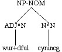
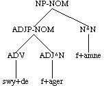
(ADJP-DAT (Q^D mycclum) (ADJR^D wyrsan)) <-- single word modifier - no phrase
(ADJP-NOM (ADVP (ADV swa) (ADV wundorlice)) <-- multi-word modifier with phrase
(ADJ^N bli+de))
Each single-word modifier in a constituent with multiple single-word
modifiers appears as sister of the head.
(NP-DAT (D^D +tam) (NUM^D twam) (ADJR^D +arrum) (N^D bocum))
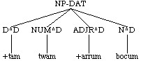
Complements of the head, on the other hand, always project a phrasal node,
whether they consist of a single word or not. Genitives are always treated
as complements. No distinction is made between different types of genitive.
(NP-NOM (NP-GEN (NPR^G Godes))
(N^N gesceaft))
(NP-DAT (Q^D sumum)
(NP-GEN (N^G +tinga)))
(NP-NOM (NP-GEN (D^G +t+are) (N^G sawle))
(N^N gecynd))
(NP-ACC (NUM^A Tw+agen)
(NP-GEN (D^G +tissera) (N^G d+ala)))
(ADJP-ACC (NP-DAT (PRO^D him))
(ADJ^A gelicne))
(ADJP-ACC (ADJ^A full)
(NP-GEN (N^G w+atres)))
(ADJP-NOM (NP-GEN (PRO$^G mines) (N^G naman))
(ADJ^N gemyndig))
(ADJP-NOM (NP-DAT (Q^D eallum) (N^D monnum))
(ADJ^N uncu+d))
Thus in the annotation, both modifiers and complements are sisters of the
head.
(NP-DAT (ADJ^D o+drum)
(ADJP-DAT (ADJ^D mislicum) (CONJ &) (ADJ^D manigfealdum))
(N^D bisgum)
(NP-GEN (D^G +disses) (N^G kynerices)))
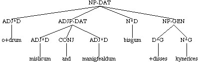
In general the head of a phrase will be overt and match the category of the
phrase level. In certain cases, however, there is no matching head. In some
cases this is because the head is actually empty (by elision, etc.), which
we do not indicate; in other cases, it may be an artifact of the YCOE schema
in which some words receive a more specific label than simply N, ADJ,
etc. For example, pronouns are labelled PRO, but act as heads of NPs.
Thus, the lack of a word-level constituent that matches the phrase in
category indicates either (1) the head has been elided; or (2) the head has
a more specific label than its general category label. Most cases of the
latter are found in NPs, where the following elements may appear as the
only member of NP: PRO, MAN, PRO$, D, Q, ADJ.
(NP-NOM (PRO^N we))
(NP-NOM (MAN^N man))
(NP-DAT (D^D +tam))
(NP-ACC (Q^A eall))
(NP-ACC (ADJ^A blinde))
(NP-DAT (PRO$^D minum))
Empty categories
The annotation system includes a number of empty categories, used to
indicate certain facts about the structure which cannot be indicated by
annotating just the lexical items of the text. Some of these categories are
linguistically motivated (various sorts of traces, and expletive subjects),
while others (other types of empty subjects and the generic empty category)
are a notational convenience. The following types of empty categories are
used in the corpus.
(NP-NOM *con*) nominative subject elided under conjunction
(NP-SBJ *con*) non-nominative subject elided under conjunction
(NP-NOM-x *exp*) empty expletive subject linked to an extraposed
clause also with -x index
(NP-NOM *exp*) empty expletive subject not linked to a clause
(NP-NOM *pro*) other empty subjects
(XP *T*) wh- trace (XP = NP, ADJP, ADVP, or PP)
(XP *ICH*) non-wh trace (XP = any phrase)
(NP-SBJ-1 *) trace of raising to subject
(XP *) generic empty category (XP = NP, VB, or Q)
(WXP 0) empty wh-operator
(C 0) empty complementizer position
Empty subjects
An empty subject is added to every finite clause without an overt
subject. It is positioned as early in the clause as possible after the
following elements: wh-traces, conjunctions, interjections, vocatives,
left-dislocations, clausal adjuncts, and constituents topicalized out of
lower clauses.
( (IP-MAT-SPE (CONJ and)
(NP-NOM *pro*) <-- empty subject following conjunction
(VBPI g+a+d)
(PP (RP ut)
(P +turh)
(NP-ACC (D^A +tone) (N^A mu+d)))
(. .))
(ID coadrian,Ad:23.2.56))
(NODE (IP-SUB-SPE (INTJ Eala)
(NP-NOM-VOC (PRO^N +du)
(ADJP-NOM (ADJS^N arleasosta)))
(, ,)
(NP-NOM-x *exp*) <-- following interjections and vocative
(NEG ne)
(VBD sceamode)
(NP (PRO +te))
(IP-INF-SPE-x (TO to)
(VB^D ceorfanne)
(NP-ACC (D^A +t+at)
(CP-REL-SPE (WNP-ACC-2 (D^A +t+at))
(C 0)
(IP-SUB-SPE (NP-ACC *T*-2)
(NP-NOM (PRO^N +du)
(ADJP-NOM (ADJ^N sylf)))
(VBD suce))))))
(ID coaelive,+ALS[Agatha]:124.2088))
( (IP-MAT-SPE (NP-DAT-LFD (D^D +tam)
(CP-REL-SPE (WNP-1 0)
(C +te)
(IP-SUB-SPE (NP *T*-1)
(NP-NOM (PRO^N ge))
(NEG+MDPI nella+d)
(VB forgifan))))
(, ,)
(NP-NOM *exp*) <-- following left-dislocation
(NP-DAT-RSP (D^D +tam))
(NEG ne)
(BEPI beo+d)
(VBN^N forgifene)
(. .))
(ID coaelhom,+AHom_7:53.1092))
Subjects elided under conjunction contain *con*. Elided subjects are
indicated in both conjoined subordinate clauses and in main clause
tokens. The empty subject in a matrix clause is coreferential with the
subject of the previous token. Elided objects could be treated in the same
way, but haven't been indicated in the corpus, since many cases are
unclear.
( (CODE <T02050002900,181.66>)
(IP-MAT (CONJ &)
(NP-NOM (NR^N God))
(ADVP-TMP (ADV^T +ta))
(VBD geworhte)
(NP-ACC (NUM^A +anne) (N^A mannan))
(PP (P of)
(NP-DAT (N^D lame)))
(. .)) (ID cocathom1,+ACHom_I,_1:181.66.60))
( (IP-MAT (CONJ &)
(NP-NOM *con*) <-- empty subject coreferent with
(PP (NP-DAT (PRO^D him)) subject in previous token
(P on))
(VBDI ableow)
(NP-ACC (N^A gast))
(. .)) (ID cocathom1,+ACHom_I,_1:181.66.61))
( (IP-MAT (CONJ &)
(NP-NOM *con*) <-- empty subject coreferent with
(NP-ACC (PRO^A hine)) subject in previous token
(VBD geliff+aste)
(. .)) (ID cocathom1,+ACHom_I,_1:181.66.62))
(NODE (CP-ADV (P for) (D^I +dan)
(C +de)
(IP-SUB (IP-SUB (NP-NOM (PRO^N he))
(NEG+BEPI nis)
(ADVP (NEG+ADV na))
(NP-NOM-PRD (N^N scyppend)))
(, .)
(CONJP (CONJ ac)
(IP-SUB-CON (NP-NOM *con*) <-- coreferent to subject
(BEPI is) in previous clause
(NP-NOM-PRD (ADJ^N atelic) (N^N sceocca))))))
(ID cocathom1,+ACHom_I,_1:183.118.118))
Empty expletive subjects are indicated by *exp*. They may be linked to an
extraposed clause in which case the node has the index -x (NP-NOM-x *exp*),
or not, in which case there is no index.
(NODE (CP-THT (C +t+at)
(IP-SUB (NP-NOM-x *exp*) <-- empty expletive subject
(NP-DAT (PRO^D him)) coindexed to clause
(RP+VBD of+tuhte)
(CP-THT-x (C +t+at)
(IP-SUB (NP-NOM (PRO^N he))
(ADVP-TMP (ADV^T +afre))
(NP-ACC (N^A mancyn))
(VBDI gesceop)))))
(ID cocathom1,+ACHom_I,_1:185.179.184))
( (IP-MAT (CONJ &)
(NP-NOM *exp*) <-- empty expletive in impersonal construction
(NP-DAT (PRO^D him))
(NP-GEN (D^G +d+as))
(VBD sceamode)
(. .)) (ID cocathom1,+ACHom_I,_1:183.140.142))
Any other empty subject in a finite clause is indicated by *pro*. This is
not meant to indicate "small pro" in any theoretical sense, although it may
include such cases. It simply means that the current subject is not exactly
co-referent with the labelled subject in the previous clause or token. It
is left to the interested investigator to determine the appropriate
analysis (or analyses) of such subjects.
( (CODE <T02070009900,205.195>)
(IP-MAT (NP-NOM-VOC (PRO$^N Mine) (N^N gebro+dra))
(, :)
(ADVP-TMP (ADV^T gyrstand+ag))
(VBD gemedmode)
(NP-NOM (PRO$^N ure) (NR^N Drihten))
(NP-ACC-RFL (PRO^A hine)
(ADJP-ACC (ADJ^A sylfne)))
(CP-THT (C +t+at)
(IP-SUB (NP-NOM *pro*) <-- no previous clause
(NP-ACC (D^A +dysne) (N^A middaneard))
(PP (P +turh)
(NP-DAT (ADJ^D so+dre) (N^D menniscnysse)))
(VBD geneosode)))
(. :)) (ID cocathom1,+ACHom_I,_3:205.195.630))
( (CODE <T02110003700,234.71>)
(IP-MAT (IP-MAT-0 (NP-NOM (D^N +Da) (ADJ^N easternan) (N^N tungelwitegan))
(VBDI gesawon)
(NP-ACC (ADJ^A niwne) (N^A steorran) (ADJ^A beorhtne)))
(, :)
(IPX-MAT=0 (ADVP (NEG+ADV na))
(PP (P on)
(NP-DAT (N^D heofenum)))
(PP (P betwux)
(NP-DAT (ADJ^D o+trum) (N^D tunglum)))))
(ID cocathom1,+ACHom_I,_7:234.71.1243))
( (IP-MAT (CONJ ac)
(NP-NOM *pro*) = "steorran", object in previous token
(BEDI w+as)
(ADJP-NOM-PRD (ADJ^N angenga))
(PP (P betwux)
(NP (N heofenan) (CONJ &) (N eor+dan)))
(. :)) (ID cocathom1,+ACHom_I,_7:234.71.1244))
Wh-operators and traces
A wh-operator is traced to the constituent in which it belongs. By default
it is the first member of this constituent preceding other empty
categories, such as empty subjects, and the traces of topicalized
elements. The wh- position may be filled by a wh-phrase or an empty
operator, indicated by 0.
( (CODE <T03020000600,11>)
(IP-MAT (NP-NOM (D^N +Ta) (ADJ^N iudeiscan))
(VBDI axodon)
(NP-ACC (NR^A Crist))
(CP-QUE (WNP-NOM-1 (WPRO^N hw+at)) <-- filled wh-position
(C 0) <-- empty complementizer position
(IP-SUB (NP-NOM-PRD *T*-1) <-- wh-trace
(NP-NOM (PRO^N he))
(BEDS w+are)))
(. .)) (ID coaelive,+ALS_[Christmas]:11.8))
( (CODE <T02050000600,178.10>)
(IP-MAT (CONJ &)
(NP-NOM (PRO^N he))
(VBPI besceawa+d)
(NP-ACC (D^A +ta) (N^A niwelnessa)
(CP-REL (WNP-NOM-1 0) <-- empty wh-operator
(C +te)
(IP-SUB (NP-NOM *T*-1) <-- subject wh-trace
(PP (P under)
(NP-DAT (D^D +tissere) (N^D eor+dan)))
(BEPI synt))))
(. .)) (ID cocathom1,+ACHom_I,_1:178.10.10))
( (IP-MAT (ADVP-TMP (ADV^T +ta))
(VBDI began)
(NP-NOM (PRO^N he))
(IP-INF (TO to)
(VB^D modigeanne)
(PP (P for)
(NP-DAT (D^D +d+are) (N^D f+agernysse)
(, .)
(CP-REL (WNP-1 0) <-- wh-operator
(C +te)
(IP-SUB (NP *T*-1) <-- object wh-trace
(NP-NOM (PRO^N he))
(HVD h+afde))))))
(. .)) (ID cocathom1,+ACHom_I,_1:179.29.35))
Non-wh- traces
The extraction site of non-wh-movement (e.g., extraposition and
topicalization) is indicated by a trace containing *ICH*. These movements
are only indicated when they cross constituent boundaries. Topicalization
of an object within the same IP, for instance, is not indicated, while
topicalization out of an embedded IP is. Extraction from NPs and other
phrasal constituents is also indicated as long as the moved element moves
right out of the constituent. By default a movement to the right is traced
to the end of the constituent of origin, while movement to the left is
traced to the beginning.
( (CODE <T02050000800,178.14>)
(IP-MAT-0 (NP (Q Maran) (N ky+d+de)
(PP *ICH*-2)) <-- trace of rightward movement last
(HVPI habba+d)
(NP-NOM (N^N englas))
(PP (P to)
(NP-DAT (NR^D Gode)))
(PP-2 (P +tonne)
(CP-CMP (WNP-1 0)
(C 0)
(IPX-SUB=0 (NP *T*-1)
(NP-NOM (N^N menn)))))
(. .)) (ID cocathom1,+ACHom_I,_1:178.14.15))
( (IP-MAT (NP-NOM (NUM^N An) (N^N angin)
(NP-GEN *ICH*-1)
(IP-MAT-PRN *ICH*-2))
(BEPI is)
(NP-GEN-1 (Q^G ealra) (N^G +tinga))
(IP-MAT-PRN-2 (NP-NOM (D^N +t+at))
(BEPI is)
(XP (NP-NOM (NR^N God) (ADJ^N +almihtig))))
(. .)) (ID cocathom1,+ACHom_I,_1:178.4.4))
( (CODE <T02050001700,179.27>)
(IP-MAT (NP-NOM (NR^N God))
(NP-ACC-1 (PRO^A hi))
(VBDI gesceop)
(QP-ACC (Q^A ealle))
(IP-SMC (NP-ACC-SBJ *ICH*-1) <-- trace of leftward movement first
(ADJP-ACC-PRD (ADJ^A gode)))
(. .)) (ID cocathom1,+ACHom_I,_1:179.27.32))
(NODE (NP-NOM (Q^N eal) (N^N mancynn)
(CP-REL (WNP-NOM-1 0)
(C +te)
(IP-SUB (NP-NOM *T*-1)
(NP-DAT-2 (PRO^D him))
(ADVP-TMP (ADV^T si+d+dan))
(PP (NP-DAT *ICH*-2) <-- trace of leftward
(P of)) movement first
(VBDI acom))))
(ID cocathom1,+ACHom_I,_1:184.150.156))
The trace of a subject raised from subject or object position of embedded
clauses is indicated by (NP-SBJ *) or (NP *) with an index.
( (CODE <T02080014500,215.276>)
(IP-MAT (ADVP (ADV So+dlice))
(ADVP-TMP (ADV^T sy+d+dan))
(BEDI w+as)
(NP-NOM-1 (PRO$ his) (N^N byrgen))
(VBN gemet)
(, :)
(IP-SMC (NP-SBJ *-1) <-- subject coreferent with subject of matrix
(PP (P mid)
(NP (FW manna)))
(VBN afylled))
(. .)) (ID cocathom1,+ACHom_I,_4:215.276.882))
( (IP-MAT (ADVP-TMP (ADV^T hwiltidon))
(NP-NOM-1 (PRO^N heo))
(BEPI is)
(ADJP-NOM-PRD (ADJ^N gesundful) (, .) (CONJ &) (ADJ^N myrige)
(IP-INF (PP (NP *-1) <-- compl. of prep. coreferent
(P on)) with subject of matrix
(TO to)
(VB^D wunienne)))
(. :)) (ID cocathom1,+ACHom_I,_12:276.33.2211))
( (IP-MAT (CONJ ac)
(NP-NOM-1 (PRO^N heo))
(BEPI is)
(IP-INF (NP *-1) <-- object of infinitive coreferent with
(TO to) subject of matrix
(VB^D cl+ansienne)
(PP (P fram)
(NP-DAT (N^D leahtrum))))
(CP-ADV (C +t+at)
(IP-SUB (NP-NOM (PRO^N heo))
(NP-ACC (NR^A God))
(VB geseon)
(MDPS mage)))
(. .)) (ID cocathom1,+ACHom_I,_36:493.222.7279))
In general within the corpus elision is indicated either with equal-sign
coindexing or ignored. There are a small number of constructions for which
neither of these solutions works very well. In these cases we use a generic
empty category (XP *) with the appropriate phrase-label as a
place-holder. The three places this strategy is used are:
-
- when the entire complement of the preposition in a second or
subsequent PP conjunct has been elided
(NODE (IP-SUB (NP-NOM (PRO^N he))
(NP-ACC (Q^A aht)
(ADJP-GEN (ADJ^G sti+tlices)))
(VBPS spr+ace)
(PP (P ongean)
(NP-ACC (PRO$ his) (N^A abbod)))
(, ,)
(PP (NEG+CONJ nau+ter) (NEG+CONJ ne)
(PP (P binnan)
(NP-DAT (N^D mynstre)))
(CONJP (NEG+CONJ ne)
(PP (P butan)
(NP *))))))
(ID cobenrul,BenR:3.16.2.231))
- when the subject of a small clause is elided under identity with some
NP in a previous conjoined clause, or is missing for any other reason
( (CODE <T06590003800,1.11.8>)
(IP-MAT (IP-MAT-0 (CONJ &)
(CP-FRL-LOC (WADVP-LOC-1 (ADV^L +t+ar))
(C 0)
(IP-SUB (ADVP-LOC *T*-1)
(NP-NOM (PRO^N hio))
(ADVP-TMP (ADVS^T +arest))
(RP up)
(VBPI wiel+d)))
(NP-ACC-2 (PRO^A hie))
(VBPI hata+d)
(NP-NOM (D^N +ta) (N^N landmen))
(IP-SMC (NP-ACC-SBJ *ICH*-2)
(NP-PRD (NR Nuchul))))
(CONJP (CONJ &)
(IPX-MAT=0 (NP-NOM (Q^N sume) (N^N men))
(IP-SMC (NP-SBJ *) <-- subject place-holder
(NP-PRD (NR Dara)))))
(37 . .))
(38 ID coorosiu,Or_1:1.11.8.153))
- when verbs or entire VPs are elided under identity with verbs or VPs
in inaccessable positions; usually the elision is in a matrix clause under
identity with a previous subordinate clause.
( (CODE <T03130002100,69>)
(IP-MAT (ADVP-TMP (ADV^T +Ta))
(NP-DAT-TMP (Q^I sume) (N^D d+ag))
(VBDI b+ad)
(NP-NOM (PRO^N he))
(IP-INF (NP-ACC-SBJ (D^A +tone) (N^A bisceop)
(NP-ACC-PRN (NR^A +Alfeh)))
(VB bl+atsian)
(NP-ACC (PRO$ his) (N^A ful)))
(. .)) (ID coaelive,+ALS[Ash_Wed]:69.2739))
( (CODE <T03130002200,70>)
(IP-MAT (NP-NOM (PRO^N He))
(NEG+MDD nolde)
(VB *) <-- refers to "bl+atsian" in IP-INF in previous token
(. ,)) (ID coaelive,+ALS[Ash_Wed]:70.2740))
Noun phrases (NP)
Case
Case is labelled on most but not all NPs. In most cases if the pos-tag
dominated by the NP does not have case, then the NP won't either (see Case for reasons why a noun might not be labelled for
case). There are two exceptions to this:
-
- Subjects of finite clauses, when overt, are always labelled nominative
(-NOM), whether or not the head of the NP is labelled for case. This is the
primary way of indicating that an NP is the subject of a finite clause.
(NODE (IP-MAT (CONJ And)
(NP-NOM (Q f+ala) <-- uninflecting f+ala not labelled for case
(NP-GEN (D^G +t+ara) (N^G gedwolmanna)))
(VBDI fengon)
(PP (P to)
(NP (N geleafan)))
(. .))
(ID coaelive,+ALS_[Basil]:351.687))
( (IP-MAT (CONJ and)
(NP-NOM (NR Ethna)) <-- place names not labelled for case
(RP up)
(VBDI ableow)
(NP-ACC (ADJP-ACC (ADV swy+de) (ADJ^A egeslice))
(N^A ontendnysse))
(. ,))
(ID coaelive,+ALS[Agatha]:221.2156))
(NODE (IP-MAT (NP-NOM (FW Cathedra)) <-- foreign words used as arguments
(BEPI is)
(VBN gereht)
(NP-NOM-PRD (N^N bisceopstol))
(PP (P on)
(NP-ACC (ADJ^A englisc)))
(. ,))
(ID coaelive,+ALS[Peter's_Chair]:4.2265))
- NPs standing in relation to other NPs may be labelled genitive (-GEN)
even if the head of the genitive NP is not labelled for case. This applies
mostly to place names.
(NODE (NP-DAT (NP-GEN (NR Samarian)) <-- no case on head NR
(N^D byrig))
(ID coaelhom,+AHom_5:1.680))
(NODE (NP-DAT (NP-GEN (NR Asian))
(N^D lande))
(ID coaelive,+ALS_[Denis]:97.5855))
(NODE (NP-ACC (NP-GEN (D^G +t+as) (FW bissextus))
(N^A gerena)))
(ID cobyrhtf,ByrM_1_[Baker-Lapidge]:2.1.82.640))
Adjuncts
NP adjuncts are distinguished from argument NPs by the label -ADT, or a
more specific adjunct label, temporal (-TMP), locative (-LOC),
left-dislocated (-LFD), or vocative (-VOC).
( (IP-MAT (NP-ACC (D^A +tone) (N^A w+aterscipe))
(VBD beworhte)
(NP-NOM (D^N se) (ADJ^N wisa) (N^N cyning)
(NP-NOM-PRN (NR^N Salomon)))
(PP (P mid)
(NP-DAT (NUM fif) (N^D porticon)))
(NP-DAT-ADT (ADJ^D f+astum) (N^D weorcstanum)) <-- unspecified adjunct
(. ,)) (ID coaelhom,+AHom_2:10.252))
( (CODE <T03370001500,59>)
(IP-MAT (NP-NOM (PRO^N We))
(HVPI habba+d)
(ADVP-TMP (ADV^T nu))
(VBN ges+ad)
(ADVP (ADV sceortlice))
(NP-ACC (D^A +tis) (N^A godspel))
(NP-DAT-ADT (ADJ^D anfealdum) (N^D andgite)) <-- unspecified adjunct
(. ,)) (ID coaelhom,+AHom_2:59.280))
( (IP-MAT (CONJ ac)
(NP-NOM (PRO^N he))
(VBPI gescip+d)
(NP-DAT-TMP (Q^I +alce) (N^D d+age)) <-- temporal adjunct
(NP-ACC (ADJ^A edniwe) (N^A sawla))
(. ,)) (ID coaelhom,+AHom_2:223.360))
( (IP-MAT-SPE (CONJ &)
(NP-NOM-LFD (D^N se) <-- left-dislocation
(CP-REL-SPE (WNP-NOM-1 0)
(C +de)
(IP-SUB-SPE (NP-NOM *T*-1)
(NP (PRO me))
(VBPI fylig+d))))
(, ,)
(NEG ne)
(VBPI g+a+d)
(NP-NOM-RSP (PRO^N he))
(ADVP (NEG+ADV na))
(PP (P on)
(NP-DAT (N^D +teostrum)))
(. ,)) (ID coaelhom,+AHom_1:287.154))
(NODE (IP-MAT-SPE (NP-NOM-VOC (N^N Hlaford)) <-- vocative
(, ,)
(NP-NOM (PRO^N ic))
(VBP geseo)
(CP-THT-SPE (C +t+at)
(IP-SUB-SPE (NP-NOM (PRO^N +tu))
(NP-NOM-PRD (N^N witega))
(BEPI eart)))
(. ;)) (ID coaelhom,+AHom_5:39.710))
Thus, an NP at IP-level without one of these labels is an argument of the
verb.
( (IP-MAT (PP (P +turh)
(NP-ACC (PRO$ his) (N^A wisdom)))
(NP-NOM (PRO^N he)) <-- subject argument
(VBD geworhte)
(NP-ACC (Q^A ealle) (N^A +ting)) <-- acc. object argument
(. .)) (ID cocathom1,+ACHom_I,_1:179.16.18))
( (IP-MAT (CONJ &)
(NP-NOM (NR^N Adam))
(NP-DAT-ADT (PRO^D him) (Q^D eallum)) <-- dative adjunct
(NP (N naman)) <-- object argument unspecified for case
(VBDI gesceop)
(. .)) (ID cocathom1,+ACHom_I,_1:181.83.78))
Arguments
Although arguments are primarily indicated by the lack of an adjunct label, there are some function labels that
are used on arguments. These are predicate -PRD, resumptive -RSP, reflexive
-RFL, and non-nominative subject -SBJ.
The -PRD label is used for non-verbal predicates, mostly with BE verbs, but
also with a selection of other verbs, both active and passive (see Reference Manual:
Predicates). It is attached to adjective phrases
(ADJP), quantifier phrases (QP), and free relatives (CP-FRL) as well as NPs.
( (IP-MAT (CONJ &)
(NP-NOM (D^N +t+at) (N^N lif))
(ADVP (ADV witodlice))
(BEDI w+as)
(NP-NOM-PRD (NP-GEN (N^G manna)) <-- predicate
(N^N leoht))
(. .)) (ID coaelhom,+AHom_1:33.19))
(NODE (IP-MAT-SPE (NP-NOM-PRD (NR^N Aslerius)) <-- predicate with passive
(NP-NOM (D^N se))
(BEDI w+as)
(VBN cw+aden))
(ID coadrian,Ad:18.2.44))
(NODE (IP-MAT (ADVP-TMP (ADV^T Nu))
(NP-NOM (PRO^N we))
(BEPI sind)
(VBN^N getealde)
(NP-NOM-PRD (NP-NOM (NP-GEN (NR^G Godes))
(N^N ceastergewaran))
(CONJP (CONJ &)
(ADJP-NOM (NP-DAT (N^D englum))
(ADJ^N gelice))))
(. :))
(ID cocathom1,+ACHom_I,_2:195.158.412))
( (IP-MAT (CONJ ac)
(PP (P +atforan)
(NP-DAT (NR^D Martine)))
(NP-NOM (PRO^N he))
(BEDI w+as)
(ADJP-NOM-PRD (ADJ^N milde)) <-- adjectival predicate
(VBN ge+tuht)
(. ,))
(ID coaelive,+ALS_[Martin]:1178.6764))
The -RSP label marks the resumptive element following a left-dislocation,
or a resumptive pronoun in wh-construction. It is attached to the phrase
label immediately dominating the resumptive element (usually this is the
head of the phrase, but the resumptive element is sometimes a possessive
pronoun, for instance).
( (IP-MAT-SPE (CONJ &)
(NP-NOM-LFD (D^N se)
(CP-REL-SPE (WNP-NOM-1 0)
(C +de)
(IP-SUB-SPE (NP-NOM *T*-1)
(NP (PRO me))
(VBPI fylig+d))))
(, ,)
(NEG ne)
(VBPI g+a+d)
(NP-NOM-RSP (PRO^N he)) <-- resumptive with left-dislocation
(ADVP (NEG+ADV na))
(PP (P on)
(NP-DAT (N^D +teostrum)))
(. ,)) (ID coaelhom,+AHom_1:287.154))
(NODE (NP-NOM-LFD (D^N Se)
(CP-REL (WNP-1 0)
(C +te)
(IP-SUB (NP-NOM-x *exp*)
(NP-DAT-RSP-1 (PRO^D him)) <-- resumptive with -wh
(VBPS scamige)
(, ,)
(CP-THT-x (C +t+at)
(IP-SUB (NP-NOM (PRO^N he))
(PP (P beforen)
(NP (NP-GEN (N^G mannen))
(N egen)))
(VBPS synegie))))))
(ID coalcuin,Alc_[Warn_35]:457.340))
Any NP that is coreferential with the subject within the same IP is
labelled -RFL. The -RFL label is not used across boundaries, so an NP in an
infinitive coreferential with the subject of the matrix clause is not
labelled -RFL. -RFL may also be used with adjuncts, in which case it is
followed by the adjunct label -ADT.
( (IP-MAT-SPE (NEG Ne)
(VBP ondr+ade)
(NP-NOM (PRO^N ic))
(NP-RFL (PRO $me))
(NP-ACC (NP-ACC (PRO$^A +tine) (N^A witu))
(CONJP (NEG+CONJ ne)
(NP-ACC (PRO$^A +tine) (ADJ^A w+alhreowan) (N^A tintrego))))
(. ,)) (ID coaelive,+ALS_[Vincent]:153.7907))
( (IP-MAT-SPE (CONJ and)
(NP-NOM (PRO^N +tu)
(, ,)
(NP-NOM-PRN (ADJ^N gesceadwisa) (N^N man)))
(, ,)
(NP-ACC-RFL (PRO^A +te)
(ADJP-ACC (ADJ^A sylfne)))
(VBPI fordest)
(. ,)) (ID coaelive,+ALS_[Chrysanthus]:269.7503))
( (IP-MAT (CONJ and)
(NP-NOM *con*)
(NP-ACC (D^A +t+at) (ADJ^A halige) (N^A heafod))
(ADVP-DIR (ADV^D ham))
(VBDI feredon)
(PP (P mid)
(NP-DAT-RFL (PRO^D him)))
(, ,)
(PTP-NOM (VAG^N +tancigende)
(NP-DAT (D^D +tam) (ADJ^D +almihtigan))
(NP-GEN (Q^G ealra) (PRO$ his) (N^G wundra)))
(. ;)) (ID coaelive,+ALS_[Edmund]:158.7069))
(NODE (IP-SUB (NP-NOM (PRO^N heo))
(HVD h+afde)
(NP-ACC (PRO^A hine))
(NP-DAT-RFL-ADT (PRO^D hire)) <-- reflexive adjunct
(PP (P to)
(NP-DAT (N^D were)))
(ADVP-TMP (ADV^T sy+d+dan)))
(ID coaelive,+ALS_[Chrysanthus]:84.7394))
The -SBJ label is used for any non-nominative subject, as well as for some
empty subjects.
( (IP-MAT (NP-NOM *con*)
(VBDI het)
(IP-INF (NP-ACC-SBJ (PRO^A hi)) <-- acc. subject in infinitive
(ADVP (ADVR swi+dor))
(VB witnian)
(NP-ACC (D^A +tone) (ADJ^A halgan) (N^A wer))
(PP (P on)
(NP-DAT (D^D +t+are) (N^D hengene))))
(. .)) (ID coaelive,+ALS_[Vincent]:121.7887))
( (CODE <T03340010100,357>)
(IP-MAT-SPE (ADVP-TMP (ADV^T Nu))
(NP-NOM (PRO^N +tu)
(NP-NOM-PRN (N^N kyning)))
(MDPI miht)
(VB macian)
(IP-SMC-SPE (NP-ACC-SBJ (PRO^A +te)) <-- acc. subj. in small clause
(ADJP-ACC-PRD (ADJ^A undeadlicne)))
(CP-ADV-SPE (P gif)
(C 0)
(IP-SUB-SPE (NP-NOM (PRO^N +tu))
(MDPI wilt)
(VB gehyran)
(NP-ACC (D^A +tone) (ADJ^A halgan) (N^A apostol))))
(. ;)) (ID coaelive,+ALS_[Thomas]:357.7779))
(NODE (PTP-DAT-ABS (RP+VBN^D oferswi+ddum)
(NP-DAT-SBJ (N^D deofle))) <-- dat. subj. in participial absolute
(ID coaelive,+ALS_[Vincent]:226.7959))
Extent
The -EXT label (extent) is rather different from the labels described in
the previous sections which all apply to NPs at IP-level (i.e., immediately
dominated by IP); that is, they indicate sentential functions. Extent is
not used at IP-level (potential extent NPs at IP-level (He walked ten
miles) are labelled -ADT), but only to modify PPs, ADVPs, ADJPs, QPs,
NPs, and adverbial clauses (CP-ADV).
(NODE (PP (NP-ACC-EXT (NUM seofon) (N^A niht))
(P +ar)
(NP-DAT (NR^D lenctene)))
(ID coaelive,+ALS[Ash_Wed]:1.2708))
(NODE (ADVP-TMP (NP-DAT-EXT (Q^D micelre) (N^D tide))
(ADV^T +ar))
(ID cobede,Bede_4:17.302.2.3047))
(NODE (ADJP-NOM (NP-GEN-EXT (Q^G manegra) (N^G mila))
(ADJ^N lang))
(ID coaelhom,+AHom_15:41.2167))
(NODE (QP-NOM-PRD (NP-EXT (NUMP (NUM syx) (NUM hund))
(NP-GEN (N^G hida)))
(Q^N micel))
(ID cobede,Bede_1:14.56.27.529))
(NODE (NP-ACC (NP-DAT-EXT (NUM feower) (N^D geare))
(N^A f+ac))
(ID coaelive,+ALS[Lucy]:8.2172))
(NODE (CP-ADV (NP-DAT-EXT (NUM^D +trim) (N^D gearum))
(P +ar)
(C 0)
(IP-SUB (NP-NOM (PRO^N he))
(RP+VBD for+dferde)))
(ID coaelive,+ALS_[Edmund]:1.6970))
Appositives
Appositive NPs have -PRN as the last label. Like extent NPs they are not
IP-level constituents, although since they quite often appear separated
from their head, they are often physically at IP-level but traced to
indicate that they are to be interpreted elsewhere. Sometimes when the
position in which they are to be interpreted is not accessible, they do
appear at IP-level. We interpret appositive fairly liberally (basically as
any full NP coreferential with a preceding NP) and the category may include
such things as right-dislocations.
(NP-NOM (PRO$^N ure) (N^N h+alend)
(NP-NOM-PRN (NR^N Crist)))
(NP-DAT (D^D +t+am) (ADJ^D halgan) (N^D m+adene)
(NP-DAT-PRN (NR^D Marian)))
( (CODE <T03030000700,22>)
(IP-MAT (NP-NOM (NR^N Eugenia)
(NP-NOM-PRN *ICH*-1)) <-- trace of appositive to be
(ADVP-TMP (ADV^T +ta)) intrepreted here
(, ,)
(NP-NOM-PRN-1 (D^N +t+at) (ADJ^N +a+dele) (N^N m+aden)) <-- appositive
(, ,)
(ADVP (ADV wel))
(VBDI +teah)
(PP (PP (P on)
(NP-DAT (N^D wisdome)))
(CONJP (CONJ and)
(PP (P on)
(NP (N u+dwytegunge)))))
(. .)) (ID coaelive,+ALS_[Eugenia]:22.204))
( (CODE <T03020003400,76>)
(IP-MAT (ADVP (ADV Swa))
(ADVP (ADV eac))
(NP-NOM (NP-GEN (D^G +t+as) (ADJ^G +almihtigan) (NR^G Godes))
(N^N sunu)
(NP-NOM-PRN *ICH*-1)) <-- trace of appositive to be
(BEPI is) intrepreted here
(ADVP-TMP (ADV^T +afre))
(PP (P of)
(NP-DAT (D^D +t+am) (N^D f+ader)))
(VBN acenned)
(, ,)
(NP-NOM-PRN-1 (NP-NOM (ADJ^N so+d) (N^N leoht)) <-- appositive
(CONJP (CONJ and)
(NP-NOM (ADJ^N so+d) (N^N wisdom))))
(. ;)) (ID coaelive,+ALS_[Christmas]:76.63))
(NODE (IP-SUB-CON-0 (NP-NOM *con*)
(VBPI ga+d)
(PP (P of)
(NP-DAT (PRO$ heora) (N^D byrgenum)))
(PP (P to)
(NP (NP-GEN (N^G lifes))
(N +ariste)))
(, ,)
(NP-NOM-PRN (D^N +ta) <-- goes with empty subject
(CP-REL (WNP-NOM-3 0)
(C +de)
(IP-SUB (NP-NOM *T*-3)
(NP-ACC (N^A god))
(VBDI worhton)))))
(ID coaelhom,+AHom_6:126.947))
Multiple functions
While most of the function labels are mutually exclusive, and thus only one
at most appears following case, a few of the labels may appear
together. Apart from -RFL-ADT, these are quite uncommon. The possible
combinations are:
-RFL-ADT reflexive adjunct (very common)
-RSP-ADT resumptive adjunct (5x)
-RFL-RSP reflexive resumptive (2x)
-SBJ-RSP non-nominative subject resumptive (8x)
-PRD-RSP resumptive predicate (6x)
The -RFL-ADT combination is very common with datives of interest and
possession.
(NODE (IP-SUB (NP-NOM (PRO^N he))
(NP-DAT-RFL-ADT (PRO^D him))
(ADJP-NOM (ADJ^N sylf))
(BEDI w+as)
(PP (P embe)
(NP-ACC (D^A +t+at) (ADJ^A $halige) (N^A $godspell)))
(PP (P $for)
(NP-DAT (D^D $+t+are) (Q^D $micclan) (N^D deopnysse)
(NP-GEN (D^G +t+as) (ADJ^G diglan) (N^G andgites)))))
(ID coaelhom,+AHom_1:55.38))
( (IP-MAT (CONJ ac)
(NP-NOM (PRO^N he))
(ADVP (ADV so+dlice))
(NEG ne)
(VBPI fint)
(PP (P on)
(NP-DAT (D^D +tam) (ADJ^D cl+anheortum)))
(NP-DAT-RFL-ADT (PRO^D him))
(NP-ACC (ADJ^A gecweme) (N^A wununge))
(. .))
(ID coaelhom,+AHom_4:212.640))
(NODE (IP-SUB-CON (NP-NOM *T*-2)
(NEG+MDP nele)
(NP-ACC (PRO^A hi))
(VB awendan)
(PP (P to)
(NP-DAT (N^D weorcum)))
(, ,)
(NP-DAT-RFL-ADT (PRO^D him))
(PP (P to)
(NP (N +tearfe))))
(ID coaelhom,+AHom_8:12.1172))
Adjective phrases (ADJP)
Adjectives may be modified by adverbs, or when comparative by a
demonstrative or quantifier extent item in the instrumental or genitive. If
any of these items is itself modified it projects a phrase, but if it is a
single word it does not. See Reference Manual:
Dative and instrumental case for the labelling of datives and
instrumentals.
(ADJP-NOM (ADV swa) (ADJ^N bysig))
(ADJP-NOM (D^I +te) (ADJR^N geleaffulran)) <-- instr. extent "the more faithful"
(ADJP-NOM (D^G +t+as) (D^I +te) (ADJR^N geleaffulra)) <-- instr. and genitive
(ADJP-NOM (Q^I micle) (ADJR^N +a+delra))) <-- "much more noble"
(ADJP-NOM (QP-DAT-EXT (ADV swa) (Q^I micle)) <-- "so much more humble"
(ADJR^N ea+dmodre))
Adjectives also take complements, often in the genitive. However, the
argument/adjunct distinction is not represented within phrases smaller than
IP, and so datives within ADJPs may be arguments or adjuncts.
(ADJP-NOM (ADJ^N orsorh) <-- unconcerned about death
(NP-GEN (N^G dea+tes)))
(ADJP-ACC (ADJ^A full) <-- full of fish
(NP-GEN (N^G fixa)))
(ADJP-ACC (NP-DAT (PRO^D heom) (Q^D bam)) <-- common to them both
(ADJ^A gem+ane))
(ADJP-NOM (NP-DAT (N^D mannum))
(ADJ^N unasecgendlic)) <-- unspeakable to men
(ADJP-NOM (ADJ^N hal) <-- with adjunct NP
(NP-DAT (Q^D eallum) (N^D limum))) "whole with respect to all limbs"
ADJPs act both as modifiers of nouns and as sentential constituents. As
modifiers they have only a case label if appropriate. As sentential
constituents they are either primary predicates and are labelled -PRD, or
not. If not, they may be separated modifiers, secondary predicates,
adjectives of result, or any other type, none of which we distinguish. In
this case they have only a case label.
(NP-ACC (ADJP-ACC (ADV swa) (ADJ^A gesceadwise))
(N^A biggengan)))
(NP-ACC (ADJP-ACC (ADV swa) (ADJ^A deorwur+dne))
(N^A cr+aft)))
(NODE (IP-SUB-SPE (NP-NOM (PRO$ his) (N^N suna))
(BEDI w+as)
(ADVP (ADV f+arlice))
(ADJP-NOM-PRD (ADJ^N dead))) <-- predicate ADJP
(ID coaelive,+ALS_[Thomas]:317.7748))
( (CODE <T03340007600,277>)
(IP-MAT (NP-NOM (NR^N Migdonia))
(ADVP-TMP (ADV^T +ta))
(VBDI com)
(PP (P to)
(NP-DAT (D^D +tam) (N^D cwearterne)))
(ADJP-NOM (ADJ^N dreorig)) <-- non-predicate ADJP
(. ,)) (ID coaelive,+ALS_[Thomas]:277.7725))
(NODE (IP-MAT-SPE (CP-ADV-SPE (P Gif)
(C 0)
(IP-SUB-SPE (NP-NOM (PRO^N ic))
(RP+VB $oferswi+dan)
(NEG ne)
(MDD mihte)
(NP-ACC (PRO^A hine))
(ADVP-TMP (ADV^T +ar))
(ADJP-ACC (ADJ^A cucene)))) <-- non-predicate ADJP
(, ,)
(NP-NOM (PRO^N ic))
(NP-ACC (PRO^A hine))
(VBP witnige)
(ADVP (ADV $+tus))
(ADJP-ACC (ADJ^A deadne))) <-- non-predicate ADJP
(ID coaelive,+ALS_[Vincent]:232.7960))
Quantifier phrases (QP)
Internally quantifier phrases have the same syntax as ADJPs. Externally,
they have a number of functions. Like ADJPs they modify nouns, and may act
as predicates when they are essentially adjectival (the "quantifiers"
MICEL, LYTEL, MA, MARE, L+ASSE, meaning great, small, greater,
lesser). In the latter case they are labelled QP at IP-level (Note that
this differs from PPCME2 policy).
(NP-ACC (QP-ACC (ADV swi+de) (Q^A micelne)) <-- modifying QP
(N^A d+al))
(NP-ACC (QP-ACC (ADV swa) (Q^A micele))
(N^A gewilnunge)
(PP (P to)
(NP-DAT (D^D +tam) (ADJ^D heofonlican) (N^D life))))
( (CODE <T03430002100,97>)
(IP-MAT (QP-NOM-PRD (Q^N Micel)) <-- QP predicate
(BEPI bi+d)
(NP-NOM (D^N seo) (N^N ben)
(CP-THT (C +t+at)
(IP-SUB (NP-NOM (D^N se) (N^N munt))
(RP aweg)
(VBPS fare)
(PP (P of)
(NP-DAT (PRO$ his) (ADJ^D agenum) (N^D stede)))
(PP (P +turh)
(NP-ACC (Q^A +anigne) (N^A mannan))))))
(. ;)) (ID coaelhom,+AHom_8:97.1216))
(NODE (IP-SUB-SPE (NP-NOM (D^N se) (N^N F+ader))
(BEPI is)
(QP-NOM-PRD (QR^N mare) <-- QP predicate
(PP (P +tonne)
(CP-CMP-SPE (WQP-1 0)
(C 0)
(IP-SUB-SPE (QP-PRD *T*-1)
(NP-NOM (PRO^N ic))
(BEPS sy))))))
(ID coaelhom,+AHom_10:19.1420))
Separated (floated) quantifiers are labelled QP with case at IP-level in
the same way as ADJPs.
( (CODE <T03370005600,269>)
(IP-MAT (NP-NOM (PRO^N Hi))
(VBDI suwodon)
(ADVP-TMP (ADV^T +ta))
(QP-NOM (Q^N ealle)) <-- separated quantifier
(. ,)) (ID coaelhom,+AHom_2:269.383))
( (CODE <T03370004800,220>)
(IP-MAT (NP-NOM (NR^N God))
(VBDI gesceop)
(NP-ACC (PRO$ his) (N^A gesceafta))
(PP (P on)
(NP-DAT (NUM syx) (N^D dagum)))
(QP-ACC (Q^A ealle)) <-- separated quantifier
(. ,)) (ID coaelhom,+AHom_2:220.355))
Unlike ADJPs, however, they also have adverbial uses. In this case, they
are labelled QP at IP-level, with case, if appropriate, and the adjunct
label (-ADT). See POS
Manual: Case on quantifiers for the rules on when adverbial quantifiers
are labelled for case.
( (IP-MAT (CONJ &)
(NP-NOM (PRO^N heo))
(MDD mihte)
(BE beon)
(QP-DAT-ADT (Q^D micclum)) <-- dative quantifier used adverbially
(VBN gecl+ansod)
(PP (P +turh)
(NP (PRO$ his) (ADJ $halgan) (N $mihte))))
(ID coaelhom,+AHom_1:420.218))
(NODE (CP-THT (C +t+at)
(IP-SUB (NP-NOM (PRO^N he))
(PP (P on)
(NP-DAT (N^D life)))
(QP-ACC-ADT (Q^A lytel)) <-- accusative
(VBDI swanc)
(PP (P for)
(NP-DAT (NR^D Criste)))))
(ID coaelhom,+AHom_17:119.2424))
(NODE (CP-ADV (P +teah)
(C +de)
(IP-SUB (NP-NOM (PRO^N hit))
(QP-ADT (NEG+Q naht)) <-- adverbial quantifier
(NEG ne) not labelled for case
(VBPS fremige)
(, ,)
(NP-DAT (NEG+CONJ ne) (PRO$ heora) (N^D freondum) (NEG+CONJ ne) (PRO^D him))))
(ID coaelhom,+AHom_11:268.1633))
(NODE (IP-INF (NP-ACC-SBJ (PRO^A hine))
(VB ascufan)
(NP-ACC (D^A +t+at) (N^A scip))
(QP-ADT (Q hwon)) <-- adverbial quantifier
(PP (P fram) not labelled for case
(NP-DAT (N^D lande))))
(ID coaelhom,+AHom_15:10.2143))
( (IP-MAT-SPE (NEG+CONJ ne)
(NP-NOM *con*)
(NEG ne)
(VBPS forhtige)
(QP-ADT (NEG+Q nateshwon)) <-- adverbial quantifier, not labelled for case
(. .)) (ID coaelhom,+AHom_10:16.1418))
Finally, for the form EALL, when it is not immediately preceding a nominal
with which it agrees it is difficult to distinguish modifying from
adverbial use. In this case EALL is labelled QP without case and put at
IP-level. It is left to the user to decide if it is a separated modifier or
an adverbial.
( (IP-MAT (CONJ &)
(NP-NOM (D^N +tes) (N^N middaneard))
(BEDI w+as)
(VBN geworht)
(QP (Q eall))
(PP (P +turh)
(NP-ACC (PRO^A hine)))
(. ,)) (ID coaelhom,+AHom_1:44.29))
( (IP-MAT (CONJ ac)
(NP-NOM (PRO^N he))
(BEPI bi+d)
(QP (Q eall))
(NP-GEN-PRD (N^G deofles))
(CP-ADV (P gif)
(C 0)
(IP-SUB (NP-NOM (PRO^N he))
(VBPI geenda+t)
(PP (P on)
(NP-DAT (D^D +dam)))))
(. ,)) (ID coaelhom,+AHom_4:252.660))
( (IP-MAT (CONJ and)
(NP-NOM (D^N +t+at) (N^N folc))
(VBD efste)
(QP (Q eall))
(ADVP (ADV swi+de))
(PP (P wi+d)
(PP (NP-GEN (PRO^G his))
(P weard)))
(. ,)) (ID coaelhom,+AHom_15:1.2137))
Prepositional phrases (PP)
Within a prepositional phrase the preposition usually takes an NP argument,
but it can also take an adverb phrase (ADVP) possibly labelled for
function. The combination of an R-pronoun and preposition when fused
(+T+ARTO, +T+ARON, etc.) is labelled ADV+P.
(PP (P on)
(NP-DAT (D^D +tisum) (N^D d+age)))
(PP (P on)
(NP-DAT (ADJ^D so+dre) (N^D menniscnysse)))
(PP (ADVP-LOC (ADV^L her))
(P beforan))
(PP (P on)
(ADVP-TMP (ADV^T +ar)))
(PP (ADV+P +t+arto))
(PP (ADV+P her+after))
PPs may be premodified by particles, adverbs and extent items. Extent items
do not follow the usual rules for modifiers, but always project a phrasal
node in this position.
(NODE (IP-MAT-SPE (NP-NOM (NR^N God))
(VBPI astih+d)
(PP (RP up) (P to) <-- particle
(NP-DAT (N^D heofonum)))
(PP (P mid)
(NP-DAT (Q^D micelre) (N^D myrh+de))))
(ID cocathom2,+ACHom_II,_1:8.200.178))
(PP (ADV fornean) <-- adverb
(P to)
(NP-DAT (N^D dea+de)))
(PP (ADVP-EXT (ADV wene)) <-- extent ADVP
(P +after)
(NP-DAT (D^I +ton)))
(NODE (IP-MAT (NP-NOM (D^N +Tis) (N^N spel))
(VBPI gebyra+d)
(PP (NP-ACC-EXT (NUM seofon) (N^A niht)) <-- extent NP
(P +ar)
(NP-DAT (NR^D lenctene)))
(. .))
(ID coaelive,+ALS[Ash_Wed]:1.2707))
Prepositional phrases are not generally marked for function as the
argument/adjunct distinction is difficult to make and notoriously
unreliable. The only function label which appears on PPs with any
regularity is the appositive label -PRN.
(NODE (IP-SUB (NP-NOM (PRO^N he))
(MDD wolde)
(NP-ACC (N^A mancynn))
(VB ahreddan)
(, :)
(PP (P +turh)
(NP-ACC (D^A +done)
(CP-REL (WNP-1 0)
(C +te)
(IP-SUB (NP-NOM (PRO^N he))
(NP-ACC (Q^A ealle) (N^A gesceafta))
(PP (NP *T*-1)
(P mid))
(VBD geworhte))))
(, .)
(PP-PRN (P +turh)
(NP-ACC (PRO$ his) (ADJ^A agen) (N^A bearn)))))
(ID cocathom1,+ACHom_I,_13:281.18.2363))
(NODE (PP (P ofer)
(NP-DAT (PRO$ his) (VBN^D gecorenum) (N^D mannum))
(, .)
(PP-PRN (CONJ +aig+der) (CONJ ge)
(PP (P ofer)
(NP-DAT (NP-GEN (NR^G Israhela))
(N^D folce)))
(, .)
(CONJP (CONJ ge)
(PP (P ofer)
(NP-DAT (Q^D eallum) (ADJ^D o+drum) (N^D leodscipum))))))
(ID cocathom1,+ACHom_I,_13:285.117.2461))
Adverbial phrases (ADVP)
Locative, temporal, and directional (-LOC, -TMP, -DIR)
Three types of sentential adverbs are distinguished: locative, temporal,
and directional. All other sentential types are unlabelled. The locative,
temporal, and directional functions are labelled on the word-level tag
(ADV^L = locative, etc.) and the function label then percolates up,
appearing on every dominating ADVP label. This is different from most
function labels, which only appear at the level the function operates
(usually IP-level). For adverbs, since the function is lexically based (as
we define it), the function label appears at all levels.
( (IP-MAT-SPE (ADVP-LOC (ADV^L her)) <-- locative adverb
(VBPI cym+d)
(NP-NOM (NR^N God) (ADJ^N sylf)))
(ID cocathom2,+ACHom_II,_1:8.186.161))
( (CODE <T02520008500,8.188>)
(IP-MAT-SPE (ADVP-TMP (ADV^T +Tonne)) <-- temporal adverb
(BEPI beo+d)
(VBN^N geopenode)
(NP-NOM (NP-GEN (ADJ^G blindra) (N^G manna))
(N^N eagan))
(. .)) (ID cocathom2,+ACHom_II,_1:8.188.163))
( (IP-MAT (CONJ and)
(NP-NOM (D^N +t+at) (N^N folc))
(VBDI beah)
(ADVP-DIR (ADV^D +dyderweard)) <-- directional adverb
(. ;)) (ID cocathom2,+ACHom_II,_2:16.157.391))
(ADVP-TMP (ADVP-TMP (ADV^T hwilon)) <-- function label at every level
(, ,)
(CONJP (ADVP-TMP (NEG+ADV na) (ADV^T symle))))
The difference between locative and directional adverbs is not always
clear. How we distinguish them can be found in the POS manual under Locative adverbs and Directional adverbs.
Finite IPs
Although in general finite IPs do not directly dominate finite IPs, there
are a small number of special types where this is the case. The first is
direct speech. A verb of saying may take a matrix clause complement. This
IP-MAT is always further labelled SPE. But note that direct speech is not
always introduced by a verb of saying in the same token, as after the first
clause further speech is separated and treated as individual tokens also
labelled -SPE.
( (CODE <T02520005800,6.134>)
(IP-MAT (ADVP-TMP (ADV^T Eft))
(NP-NOM (D^N se) (N^N witega)
(NP-NOM-PRN (NR^N Hieremias)))
(VBDI cw+a+d)
(PP (P be)
(NP-DAT (D^D +dam) (N^D h+alende)))
(IP-MAT-SPE (NP-NOM (D^N +des)) <-- direct speech
(BEPI is)
(NP-NOM-PRD (PRO$^N ure) (NR^N god)))
(. .)) (ID cocathom2,+ACHom_II,_1:6.134.104))
( (IP-MAT-SPE (CONJ and) <-- direct speech continues
(NEG+BEPI nis) in next token
(NP-NOM (NEG+Q^N nan) (ADJ^N o+der))
(VBN geteald)
(PP (P to)
(NP-DAT (PRO^D him)))
(. .)) (ID cocathom2,+ACHom_II,_1:6.134.105))
Secondly, there are a number of kinds of parenthetical matrix clauses. The
major ones are quotatives (said he) and glosses (that is,).
( (IP-MAT-SPE (VBI Bera+d)
(, ,)
(IP-MAT-PRN (NP-NOM (PRO^N ic)) <-- quotative
(VBP bidde))
(, ,)
(NP-ACC (PRO$^A eowre) (N^A byr+tena))
(PP (NP-RFL (PRO eow))
(P betwynan))
(. ,))
(ID coaelhom,+AHom_2:195.346))
(NODE (IP-MAT (VBI Ber)
(NP-ACC (PRO$^A +tin) (N^A legerbed))
(, ,)
(IP-MAT-PRN (NP-NOM (D^N +t+at)) <-- gloss
(BEPI is)
(, ,)
(XP (IP-MAT (BEPH beo)
(ADJP-NOM-PRD (ADJ^N ge+tyldig)))))
(. ,))
(ID coaelhom,+AHom_2:195.343))
Thirdly, occasionally an expletive subject in constructions like [it] is
written... is linked to a matrix clause rather than the more usual
that-clause or question. In this case the IP-MAT has an -x index as
is usual for expletives and extraposed clauses (see Reference Manual:
Expletive constructions).
(NODE (IP-MAT (ADVP (ADV So+dlice))
(NP-NOM-x (PRO^N hit))
(BEPI is)
(VBN awriten)
(, :)
(IP-MAT-x (CP-FRL-LFD (WNP-NOM-1 (ADV Swa) (WPRO^N hwa))
(C swa)
(IP-SUB (NP-NOM *T*-1)
(MDP wile)
(BE beon)
(NP-NOM-PRD (N^N freond)
(NP-GEN (D^G +tisre) (N^G worulde)))))
(, :)
(NP-NOM-RSP (D^N se))
(BEPI bi+d)
(VBN geteald)
(NP-NOM-PRD (NP-GEN (NR^G Godes))
(N^N feond)))
(. .))
(ID cocathom1,+ACHom_I,_10:264.165.1951))
(NODE (IP-MAT (NP-NOM-x *exp*)
(PP (P Be)
(NP-DAT (D^D +tam)))
(BEPI is)
(VBN awriten)
(, :)
(IP-MAT-x (ADJP-NOM-PRD (ADJ^N eadig))
(BEPI bi+d)
(NP-NOM (D^N se)
(N^N man)
(CP-REL (WNP-NOM-1 0)
(C +te)
(IP-SUB (NP-NOM *T*-1)
(ADVP-TMP (ADV^T symle))
(BEPI bi+d)
(VAG forhtiende)))))
(. :))
(ID cocathom1,+ACHom_I,_28:414.128.5538))
When a matrix IP acts as the predicate of a copular verb, it is surrounded
by an XP-PRD label (see Reference Manual: XP
predicates) rather than being directly labelled as the predicate. As
the glossed item in a gloss, it is labelled XP.
( (CODE <T02630005000,114.138>)
(IP-MAT (NP-NOM (D^N +T+at) (ADJ^N forme) (N^N bebod))
(BEPI is)
(, .)
(XP-PRD (IP-MAT-SPE (NP-NOM (NR^N Drihten) <-- predicate
(NP-NOM-PRN (PRO$^N +din) (NR^N God)))
(, .)
(BEPI is)
(NP-NOM-PRD (NUM^N an) (NR^N God))))
(. ;)) (ID cocathom2,+ACHom_II,_12.1:114.138.2475))
( (IP-MAT (CONJ and)
(NP-NOM (PRO$ his) (N^N nama))
(BEPI bi+d)
(NP-NOM-PRD (NR^N Emmanuhel)
(CP-REL (WNP-NOM-1 +t+at)
(C 0)
(IP-SUB (NP-NOM *T*-1)
(BEPI is)
(VBN gereht)
(XP-PRD (IP-MAT (NP-NOM (NR^N God))
(BEPI is)
(PP (P mid)
(NP (PRO us))))))))
(. ;)) (ID cocathom2,+ACHom_II,_1:7.141.114))
(NODE (IP-MAT (VBI Ber)
(NP-ACC (PRO$^A +tin) (N^A legerbed))
(, ,)
(IP-MAT-PRN (NP-NOM (D^N +t+at))
(BEPI is)
(, ,)
(XP (IP-MAT (BEPH beo) <-- "gloss"
(ADJP-NOM-PRD (ADJ^N ge+tyldig)))))
(. ,))
(ID coaelhom,+AHom_2:195.343))
All these types may be immediately dominated by IP-SUB as well as IP-MAT,
but an IP-MAT never immediately dominates an IP-SUB.
Non-finite IPs
Infinitives (IP-INF)
Non-finite IPs include infinitives, which come in two main types,
complement of verb, adjective, or noun (IP-INF) and non-complement
(IP-INF-NCO). Most non-complement infinitives are purpose infinitives, but
we do not further distinguish types. Infinitives have accusative subjects
in the accusative-and-infinitive construction, which are labelled
NP-ACC-SBJ to distinguish them from accusative objects in the same
clause. Arbitrary PRO subjects in these cases are not added (unlike in the
PPCME2). An empty subject of the type (NP-SBJ *con*) (subject elided under
conjunction) is added in conjoined contexts. Both bare and TO infinitives
occur. When "inflected" (as usually) TO infinitives have a case label ^D
(e.g., VB^D, HV^D, etc.).
(NODE (CP-ADV (P mid) (D^D +tam)
(C +te)
(IP-SUB (NP-NOM (PRO^N he))
(VBDI het)
(IP-INF (NP-ACC-SBJ (PRO^A hine)) <-- acc. subject
(VB arisan)))) <-- complement infinitive
(ID coaelhom,+AHom_2:186.337))
( (IP-MAT (CONJ and)
(NP-NOM *con*)
(VBDI began)
(IP-INF (TO to) <-- TO infinitive
(VB^D bodienne) <-- inflected infinitival verb
(NP-DAT (D^D +tam) (N^D burhwarum))
(PP (P embe)
(NP-ACC (NR^A Crist))))
(. .)) (ID coaelhom,+AHom_5:216.816))
( (CODE <T02090007600,222.162>)
(IP-MAT (PP (P +At)
(NP (ADJS nextan)))
(CP-ADV (ADV^T +ta) (P +da)
(C 0)
(IP-SUB (NP-NOM (PRO^N he))
(VBD gefredde)
(NP (NP-GEN (PRO$ his) (N^G dea+des))
(N neal+acunge))))
(, .)
(ADVP-TMP (ADV^T +ta))
(VBDI het)
(NP-NOM (PRO^N he))
(IP-INF (NP-DAT-ADT (PRO^D him)) <-- complement infinitive
(NP-ACC (PRO$ his) (N^A seax))
(VB ar+acan)
(IP-INF-NCO (TO to) <-- non-complement infinitive
(VB^D screadigenne)
(NP-ACC (NUM^A +anne) (N^A +appel))))
(. :)) (ID cocathom1,+ACHom_I,_5:222.162.1026))
( (IP-MAT-SPE (CONJ &)
(NP-NOM (PRO^N he))
(NP (PRO me))
(VBD sende)
(PP (P to)
(NP (PRO +te)))
(IP-INF-NCO-SPE (NP-ACC (D^A +tis))
(TO to)
(NP-DAT (VB^D cy+tenne))))
(ID cocathom1,+ACHom_I,_25:379.22.4818))
Small clauses (IP-SMC)
Small clauses are labelled IP-SMC. They always have a subject, which is
usually accusative, but other cases occur when the dominating verb takes a
different case. The predicate is either a participle, present or past, or a
nominal or adjectival predicate. The predicate is nominative in passive
constructions, nominative or accusative with verbs of naming (so in
practice often ambiguous), and otherwise matches the case of the subject,
usually accusative. The only additional label which may appear on IP-SMC is
direct speech -SPE.
( (IP-MAT (CONJ &)
(NP-NOM (PRO^N he))
(VBD afunde)
(IP-SMC (NP-ACC-SBJ (PRO^A hi)) <-- acc. subject
(NP-DAT (PRO^D him))
(ADJP-ACC-PRD (ADJ^A wyr+te))) <-- adjectival predicate
(. .)) (ID cocathom1,+ACHom_I,_36:489.85.7195))
( (IP-MAT (CONJ and)
(NP-NOM *con*)
(VBPI afint)
(IP-SMC (NP-ACC-SBJ (PRO^A hit))
(VBN ged+aft)) <-- participial predicate
(. .))
(ID coaelhom,+AHom_4:44.545))
( (CODE <T02110003900,234.80>)
(IP-MAT (NP-NOM (PRO^N Hi))
(VBDI oncneowon)
(IP-SMC (NP-ACC-SBJ (PRO^A hine))
(NP-ACC-PRD (ADJ^A so+tne) (N^A cyning))) <-- nominal predicate
(, .)
(CP-ADV (ADV^T +ta) (P +da)
(C 0)
(IP-SUB (NP-NOM (PRO^N hi))
(VBDI cw+adon)
(QTP (NP-ACC (NP-GEN (NR^G Iudea))
(N^A cyning)))))
(. .)) (ID cocathom1,+ACHom_I,_7:234.80.1249))
(NODE (IP-SUB (NP-NOM-1 (PRO^N heo))
(IP-SMC (NP-SBJ *-1)
(ADJP-NOM-PRD (ADJR^N haligra))) <-- nominative predicate
(VBN gemeted) with passive
(BE beon)
(MDD meahte))
(ID cobede,Bede_2:8.120.21.1144))
(NODE (IP-MAT-SPE (ADVP-TMP (ADV^T +tonne))
(VBP hate)
(NP-NOM (PRO^N we))
(IP-SMC-SPE (NP-ACC-SBJ (PRO^A hine))
(NP-NOM-PRD (N^N morgensteorra))) <-- nominative predicate
(, ,) with verb of naming
(CP-ADV-SPE (P for+tam)
(C 0)
(IP-SUB-SPE (NP-NOM (PRO^N he))
(VBPI cym+d)
(ADVP-DIR (ADV^D eastan))
(RP up)))
(. ;))
(ID coboeth,Bo:39.136.4.2707))
(NODE (IP-SUB (NP-NOM (PRO^N he))
(VBDI het)
(IP-SMC (NP-ACC-SBJ (PRO^A hi))
(NP-PRD (N godas)))) <-- nom/acc ambiguous predicate
(ID coaelhom,+AHom_22:672.3701)) with verb of naming
(NODE (IP-SUB (NP-NOM (PRO^N hi))
(VBDI wendon)
(IP-SMC (NP-GEN-SBJ (PRO^G his)) <-- non-accusative subject
(ADJP-GEN-PRD (ADJR^G beteran)
(PP (P +tonne)
(CP-CMP (WADJP-2 0)
(C 0)
(IP-SUB (ADJP-PRD *T*-2)
(NP-NOM (PRO^N he))
(BEDS w+are)))))))
(ID coboeth,BoHead:30.35))
Participial phrases (PTP)
A participial phrase (PTP) is any adjunct or modifying phrase headed by a
participle (i.e., not including small clauses). Modifying PTPs are like
ADJPs in that they agree with the NP they modify and are included within
the constituent they modify when contiguous to it (before or after for
modified nouns, after only for pronouns), but are not traced if separated,
as long as they are labelled for case. Naming participles are treated as a
special case since they are rarely inflected. See Reference Manual:
Participial phrases.
(NODE (NP-DAT (NEG+Q^D nanum) (N^D menn)
(PTP-DAT (PP (P on) <-- modifying PTP
(NP-DAT (D^D +disum) (ADJ^D deadlican) (N^D life)))
(VAG^D libbendum)))
(ID coaelive,+ALS_[Christmas]:81.67))
( (CODE <T03020007700,178>)
(IP-MAT (NP-NOM (PRO^N Heo))
(BEPI is)
(ADJP-NOM-PRD (ADJ^N unges+awenlic) (CONJ and) (ADJ^N unlichomlic))
(, ,)
(PP (PP (P butan)
(NP (N h+afe)))
(CONJP (CONJ and)
(PP (P butan)
(NP (N bleo)))))
(, ,)
(PTP-NOM (PTP-NOM (PP (P mid) <-- separated PTP
(NP-DAT (D^D +tam) (N^D lichaman)))
(VBN^N befangen))
(CONJP (CONJ and)
(PTP-NOM (PP (P on)
(NP-DAT (Q^D eallum) (N^D limum)))
(VAG^N wunigende))))
(. .)) (ID coaelive,+ALS_[Christmas]:178.136))
Participial absolutes, most commonly dative or nominative, are adjuncts
which have a subject that agrees with the participle. A non-nominative
subject is distinct from the subject of the clause, but the nominative
type also includes constructions of the type They came down the street,
all singing loudly where the subjects are coreferential, as well as
true absolutes. They are labelled PTP-CASE-ABS.The occasional cases in
which the predicate in these constructions is not verbal but adjectival are
still labelled as participial absolutes.
(NODE (IP-SUB (NP-NOM (ADJ^N +agyptisce) (N^N folc))
(, ,)
(PTP-DAT-ABS (VBN^D forl+atenum) <-- dative absolute
(NP-DAT-SBJ (N^D gedwylde)))
(, ,)
(VBD gelyfde)
(PP (P on)
(NP-ACC (NR^A Drihten))))
(ID coaelive,+ALS_[Eugenia]:278.358))
( (IP-MAT (CONJ o+t+te)
(NP-NOM *con*)
(PTP-DAT-ABS (RP+VBN^D for+dwyrftum)
(NP-DAT-SBJ (N^D limum)))
(PP (P to)
(NP (N w+afersyne)))
(VBD tucode)
(, ,)
(PP (P mid)
(NP-DAT (Q^D gehwilcum) (N^D witum)))
(. ;)) (ID coaelive,+ALS_[Maurice]:125.5765))
( (CODE <T05090025200,672>)
(IP-MAT (ADVP (ADV +Dus))
(PTP-NOM-ABS (NP-NOM (PRO^N he)) <-- nominative absolute
(PP (P mid)
(NP-DAT (N^D tearum)))
(VAG^N biddende))
(, ,)
(NP-DAT-1 (PRO^D him))
(ADVP-TMP (ADV^T eft))
(NP-NOM (ADJ^N o+ter) (N^N ge+tanc))
(PP (NP-DAT *ICH*-1)
(P on))
(VBDI befeoll)
(PTP-NOM (ADVP (ADV +tus))
(VAG^N cwe+dende))
(. ,)) (ID comary,LS_23_[MaryofEgypt]:672.444))
(NODE (IP-SUB (ADVP-TMP (ADV^T +ta))
(NP-NOM (D^N se)
(N^N lichoma)
(NP-GEN (NP-GEN (D^G +t+are) (ADJ^G halgan) (N^G f+amnan))
(CONJP (CONJ &)
(NP-GEN (D^G +t+are)
(NP-GEN (NR^G Cristes))
(N^G bryde))))
(PTP-DAT-ABS (ADJP-DAT-PRD (ADJ^D openre)) <-- absolute with adjectival predicate
(NP-DAT-SBJ (D^D +t+are) (N^D byrgenne))))
(BEDI w+as)
(RP for+d)
(PP (P on)
(NP-ACC (N^A leoht)))
(VBN gel+aded))
(ID cobede,Bede_4:21.320.14.3215))
Complementizer phrases (CP)
Most subordinate clauses are complementizer phrases (CP). The CP contains
wh-phrases and complementizers as well as the complement IP-SUB.
CPs, like IPs, are always labelled for type.
The CP-level may contain in addition to the IP-SUB:
-
In most cases one or other (or in certain types of clauses, notably
comparatives) both positions may be empty. An empty position is indicated
by 0.
( (CODE <T03020000600,11>)
(IP-MAT (NP-NOM (D^N +Ta) (ADJ^N iudeiscan))
(VBDI axodon)
(NP-ACC (NR^A Crist))
(CP-QUE (WNP-NOM-1 (WPRO^N hw+at)) <-- indirect question, wh-position
(C 0) <-- (empty) complementizer position
(IP-SUB (NP-NOM-PRD *T*-1) <-- IP-SUB
(NP-NOM (PRO^N he))
(BEDS w+are)))
(. .)) (ID coaelive,+ALS_[Christmas]:11.8))
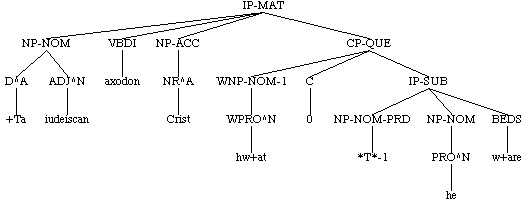
( (CODE <T03020004200,98>)
(IP-MAT (NP-NOM (N^N U+twytan))
(VBPI s+acga+d)
(CP-THT (C +t+at) <-- that-clause, filled complementizer position
(IP-SUB (NP-NOM (NP-GEN (D^G +t+are) (N^G sawle))
(N^N gecynd))
(BEPI is)
(ADJP-NOM-PRD (ADJ^N +dryfeald))))
(. :)) (ID coaelive,+ALS_[Christmas]:98.77))
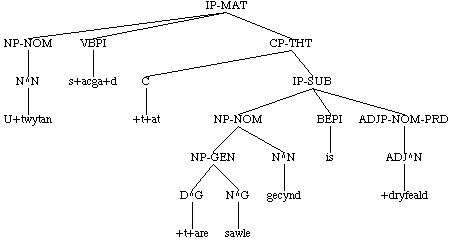
(NODE (NP-DAT (D^D +tam) (ADJ^D +almihtigan) (NR^D Gode)
(CP-REL (WNP-NOM-1 0) <-- relative clause, empty wh-position
(C +te) <-- filled complementizer
(IP-SUB (NP-NOM *T*-1)
(NP-ACC (Q^A ealle) (N^A +tincg))
(VBDI gesceop))))
(ID copreflives,+ALS_[Pref]:29.16))
( (NP-ACC (D^A +t+at)
(CP-REL (WNP-NOM-1 (D^N +t+at)) <-- relative clause, filled wh-position
(C 0) <-- empty complementizer
(IP-SUB (NP-NOM *T*-1)
(ADJP-NOM-PRD (ADJ^N god))
(BEPI is))))
(ID coaelive,+ALS_[Christmas]:90.94))
( (IP-MAT (CONJ ac)
(NP-NOM (D^N se) (ADJ^N so+da) (N^N scyppend))
(NEG+HVPI n+af+d)
(NP-ACC (NEG+Q^A nan) (N^A angin))
(, ,)
(CP-ADV (P for+dan) <-- adverbial clause headed by a preposition
(C +te)
(IP-SUB (NP-NOM (PRO^N he))
(BEPI is)
(NP-DAT-RFL-ADT (PRO^D him))
(ADJP-NOM (ADJ^N sylf))
(NP-NOM-PRD (N^N angin)
(PTP-NOM (ADVP (NEG+ADV na))
(VBN^N (VBN^N gesceapen) (NEG+CONJ ne) (VBN^N geworht))))))
(. .)) (ID coaelive,+ALS_[Christmas]:63.50))
( (CODE <T03050005900,159>)
(CP-QUE-SPE (WADVP-1 (WADV Hu)) <-- direct question, no complementizer position
(IP-SUB-SPE (ADVP *T*-1)
(MDP mage)
(NP-NOM (PRO^N we)
(ADJP-NOM (ADJ^N blinde)))
(NP-ACC (D^A +tone) (ADJ^A blindan))
(VB geh+alan))
(. ?)) (ID coaelive,+ALS_[Julian_and_Basilissa]:159.1034))
The complement clause dominated by CP is labelled IP-SUB. Conjunct clauses
are labelled IP-SUB-CON.
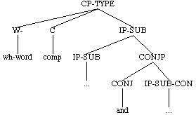
( (IP-MAT (NP-NOM *con*)
(VBDI s+adon)
(CP-THT (C +t+at)
(IP-SUB (IP-SUB (NP-NOM (PRO^N he))
(VBDS forlete)
(NP-ACC (D^A +ta) (VAG^A lifiendan) (N^A godas)))
(, ,)
(CONJP (CONJ and)
(IP-SUB-CON (NP-NOM *con*) <-- conjunct clause
(NP-ACC (Q^A ealle) (D^A +ta) (N^A burhwar+a))
(VBD gebigde)
(PP (P to)
(NP-DAT (NR^D Criste)))))))
(. .)) (ID coaelive,+ALS_[Eugenia]:284.362))
Wh- CPs
The following types of CPs always have a wh- and a complementizer position
indicated, with the exception of CP-QUE when the question is direct
(indirect questions, also labelled CP-QUE do have a complementizer
position), and CP-EOP, which never has one. Both positions, when empty,
contain 0.
questions -QUE
relatives -REL
clause-adjoined relatives -CAR
free relatives -FRL
it-clefts -CLF
comparatives -CMP
infinitival relatives/ -EOP
purpose inf. with gap
Questions (CP-QUE)
Direct and indirect questions are distinguished by the presence (indirect
questions) or absence (direct questions) of the complementizer
position. The lack of a complementizer position is our standard way of
indicating the verb has moved to C. The wh-phrase is traced to the
subordinate clause in which it belongs. It is by default always the first
element in the clause unless it clearly has been extracted from a
constituent deeper in the clause, in which case it is the first element in
that constituent (see Empty categories). As
usual any question in a direct speech sequence has -SPE as its last label.
See also Yes/no questions.
(CP-QUE (WNP-NOM-1 (WPRO^N hwa)) <-- direct question
(IP-SUB (NP-NOM *T*-1) <-- trace of wh-operator
(...)))
(CP-QUE (WNP-NOM-1 (WPRO^N hwa)) <-- indirect question
(C 0) <-- complementizer
(IP-SUB (NP-NOM *T*-1) <-- trace
(...)))
( (CODE <T02090000400,217.11>)
(CP-QUE-SPE (WADVP-LOC-1 (WADV^L Hw+ar)) <-- direct question
(IP-SUB-SPE (ADVP-LOC *T*-1)
(BEPI is)
(NP-NOM (NP-GEN (ADJ^G iudeiscra) (N^G leoda))
(N^N cyning)
(, .)
(CP-REL-SPE (WNP-NOM-2 (D^N se))
(C +te)
(IP-SUB-SPE (NP-NOM *T*-2)
(VBN acenned)
(BEPI is)))))
(. .)) (ID cocathom1,+ACHom_I,_5:217.11.894))
( (IP-MAT (CONJ &)
(NP-NOM *con*)
(VBD smeade)
(CP-QUE (WADVP-1 (WADV hu)) <-- indirect question
(C 0)
(IP-SUB (ADVP *T*-1)
(NP-NOM (PRO^N he))
(NP-ACC (PRO^A hi))
(VB fordon)
(MDD mihte)))
(. .)) (ID cocathom1,+ACHom_I,_1:183.127.124))
Appositive/parenthetical questions (CP-QUE-PRN) are very common. They are
often separated from their antecedant with a trace to indicate where they
are to be interpreted.
(NODE (IP-MAT (ADVP-TMP (ADV^T +Da))
(VBDI geseah)
(ADVP-TMP (ADV^T sona))
(NP-NOM (NR^N Sebastianus))
(NP-ACC (D^A +t+at)
(, ,)
(CP-QUE-PRN (WADVP-1 (WADV hu))
(C 0)
(IP-SUB (ADVP *T*-1)
(NP-NOM (D^N +ta)
(NP-GEN (NR^G Godes))
(N^N cempan))
(AXDI ongunnon)
(VB hnexian)
(PP (P for)
(NP-DAT (D^D +tam) (Q^D mycclan) (N^D gewynne))))))
(. ,))
(ID coaelive,+ALS_[Sebastian]:50.1240))
(NODE (IP-SUB (NP-NOM (PRO^N he))
(PP (P embe)
(NP-ACC (D^A +t+at)
(CP-QUE-PRN *ICH*-1))) <-- trace of appositive question
(VBPS +tence)
(, ,)
(CP-QUE-PRN-1 (WADVP-2 (WADV hu)) <-- separated appositive question
(C 0)
(IP-SUB (ADVP *T*-2)
(NP-NOM (PRO^N he))
(VBPS arise)
(PP (P of)
(NP-DAT (D^D +tam) (VAG^D reocendan) (N^D meoxe))))))
(ID coaelhom,+AHom_6:202.978))
Another common type are extraposed subject questions indexed to an
expletive subject, empty or overt.
( (IP-MAT (CONJ and)
(NP-NOM (PRO^N he))
(ADVP-TMP (ADV^T sona))
(ADJP-NOM (ADJ^N gesund))
(ADJP-NOM (ADJ^N sylf))
(RP upp)
(VBDI aras)
(, ,)
(CP-ADV (P swa)
(C +d+at)
(IP-SUB (NP-NOM-x (PRO^N hit)) <-- overt expletive subject
(NEG+BEDI n+as)
(ADJP-NOM-PRD (ADJ^N gesene))
(CP-QUE-x (WQ hwe+der) <-- coindexed question
(C 0)
(IP-SUB (NP-NOM (PRO^N he))
(ADJP-NOM-PRD (ADJ^N seoc))
(BEDS w+are)))))
(. .)) (ID coaelive,+ALS_[Maur]:257.1649))
( (CODE <T03250020000,806>)
(IP-MAT (NP-NOM-x *exp*) <-- empty expletive subject
(ADVP-TMP (ADV^T Oft))
(BEPI is)
(VBN geswutelod)
(CP-QUE-x (WADVP-1 (WADV hu)) <-- coindexed question
(C 0)
(IP-SUB (ADVP *T*-1)
(NP-NOM (NR^N God))
(VBD gescylde)
(NP-ACC (D^A +t+at) (N^A folc))
(PP (P wi+d)
(NP (PRO$ heora) (N wi+tersacan)))
(CP-ADV (P gif)
(C 0)
(IP-SUB (NP-NOM (PRO^N hi))
(VBDI wur+dodon)
(NP-ACC (PRO^A hine))))))
(. ;)) (ID coaelive,+ALS_[Maccabees]:806.5366))
Relatives and clause-adjoined relatives (CP-REL, CP-CAR)
Relatives and clause-adjoined relatives have the same structure as indirect questions. They are labelled -REL and -CAR
respectively. Relatives generally have either one or both of the wh- and
complementizer positions filled. When not contiguous to their antecedant
they are traced.
( (CODE <T02520000600,3.11>)
(IP-MAT (NP-NOM (D^N +Teos) (N^N acennednys)
(CP-REL (WNP-1 0) <-- empty wh-
(C +te) <-- filled complementizer position
(IP-SUB (NP *T*-1)
(NP-NOM (PRO^N we))
(ADVP-TMP (ADV^T nu))
(ADVP-TMP (ADV^T tod+ag))
(VBPI wur+dia+d))))
(BEDI w+as)
(PP (P of)
(NP-DAT (ADJ^D eor+dlicere) (N^D meder)))
(PP (P buton)
(NP-DAT (Q^D +alcum) (ADJ^D eor+dlicum) (N^D f+ader)))
(. .)) (ID cocathom2,+ACHom_II,_1:3.11.10))
( (CODE <T02520000200,3.2>)
(IP-MAT (NP-NOM (PRO^N He)
(CP-REL *ICH*-1)) <-- trace of relative clause
(BEDI w+as)
(ADVP-TMP (ADV^T tod+ag))
(VBN acenned)
(PP (P of)
(NP-DAT (D^D +dam) (ADJ^D halgan) (N^D m+adene)
(NP-DAT-PRN (NR^D MARIAN))))
(PP (PP (P mid)
(NP (N lichaman)))
(, .)
(CONJP (CONJ and)
(PP (P mid)
(NP (N sawle)))))
(, .)
(CP-REL-1 (WNP-NOM-2 (D^N se)) <-- filled wh-
(C +de) <-- filled complementizer
(IP-SUB (NP-NOM *T*-2)
(BEDI w+as)
(ADVP-TMP (ADV^T +afre))
(PP (P mid)
(NP-DAT (D^D +dam) (N^D f+ader)))
(VAG wunigende)
(PP (P on)
(NP-DAT (D^D +t+are) (N^D godcundnysse)))))
(. ;)) (ID cocathom2,+ACHom_II,_1:3.2.5))
(NODE (NP-NOM-PRD (NP-GEN (D^G +t+as) (N^G f+ader)
(CP-REL *ICH*-1))
(N^N wisdom)
(, .)
(CP-REL-1 (WPP-2 (P +turh) <-- filled wh-
(NP-ACC (D^A +done)))
(C 0) <-- empty complementizer
(IP-SUB (PP *T*-2)
(NP-NOM (PRO^N he))
(VBDI (VBD geworhte) (, .) (CONJ and) (VBDI gesceop))
(NP-ACC (Q^A ealle) (N^A gesceafta)))))
(ID cocathom2,+ACHom_II,_1:3.6.8))
Clause-adjoined relatives are those that refer back to the whole action of
the preceding clause (Mary bought a porsche, which Jane thought was
silly). The use of CP-CAR is a last-resort policy in the YCOE. Many such
cases are ambiguous between a relative reading and starting a new clause
with the "relative pronoun" as subject. We adopt the latter interpretation
whenever possible, but a few intractable cases remain, notably those with
an overt complementizer.
(NODE (IP-MAT (PP (P For)
(NP-DAT (D^D +t+am) (N^D slege)))
(NEG+MDDI noldan)
(NP-NOM (NR^N Romane))
(VB brengan)
(NP-DAT (D^D +t+am) (N^D consule))
(NP-ACC (D^A +tone) (N^A triumphan))
(, ,)
(CP-CAR (WNP-NOM-1 0)
(C +te)
(IP-SUB (NP-NOM *T*-1)
(NP-NOM-PRD (PRO$ heora) (N^N gewuna))
(BEDI w+as)))
(, ,)
(CP-ADV (P +teh)
(C 0)
(IP-SUB (NP-NOM (PRO^N he))
(NP (N sige))
(HVD h+afde)))
(. .))
(ID coorosiu,Or_3:6.60.6.1167))
Free relative clauses (CP-FRL)
Internally free relatives are clausal. There are two types, the TH- type
and the WH- type. The TH- type have the same structure as relative clauses. The WH-type is headed by SWA HW-
SWA and is equivalent to Modern English whatever type. Note that in
the WH- type we take the second SWA as the complementizer.
(NODE (IP-SUB-0 (NP-NOM (Q^N gehwa))
(MDD sceolde)
(VB agildan)
(NP-DAT (D^D +dam) (N^D casere))
(CP-FRL (WNP-NOM-1 (D^N +t+at)) <-- TH- type
(C 0)
(IP-SUB (NP-NOM *T*-1)
(NP-DAT (PRO^D him))
(VBPI gebyre+d))))
(ID cocathom2,+ACHom_II,_4:37.252.850))
( (IP-MAT (CONJ and)
(NP-NOM *con*)
(VBPI gefyl+d)
(ADVP (ADV gastlice))
(CP-FRL (WNP-ACC-1 (ADV swa) (WPRO^A hw+at)) <-- WH- type
(C swa) <-- SWA complementizer
(IP-SUB (NP-ACC *T*-1)
(NP-NOM (D^N seo) (ADJ^N ealde) (N^N gecy+dnys))
(PP (P mid)
(NP-DAT (ADJ^D mislicum) (N^D gesetnyssum)))
(VBD getacnode)))
(. ;)) (ID cocathom2,+ACHom_II,_4:31.65.722))
Externally free relatives are treated as NPs, which means that they take
basically the same range of labels as NPs. A CP-FRL with
no additional labels (or with only -SPE) is a complement of the verb.
-ADT adjunct
-DIR directional
-LFD left-dislocation
-LOC locative
-PRD predicate
-PRN appositive or parenthetical
-SPE direct speech
-SBJ subject
-TMP temporal
( (CODE <T02520001700,4.41>)
(IP-MAT (NP-NOM (PRO^N He))
(AXDI ongann)
(BE beon)
(CP-FRL-PRD (WNP-NOM-1 (D^N +t+at)) <-- predicate
(C 0)
(IP-SUB (NP-NOM-PRD *T*-1)
(NP-NOM (PRO^N he))
(NEG+BEDI n+as)))
(. .)) (ID cocathom2,+ACHom_II,_1:4.41.29))
( (CODE <T02540006200,22.115>)
(IP-MAT-SPE (ADJP-NOM-PRD (ADJ^N So+d))
(BEPI is)
(CP-FRL-SBJ-SPE (WNP-ACC-1 (D^A +t+at)) <-- subject
(C 0)
(IP-SUB-SPE (NP-ACC *T*-1)
(NP-NOM (D^N se) (N^N sealmwyrhta))
(PP (P to)
(NP-DAT (NR^D Gode)))
(VBDI gecw+a+d)))
(. ;)) (ID cocathom2,+ACHom_II,_3:22.115.527))
( (CODE <T02550000700,29.9>)
(IP-MAT (NP-NOM (D^N Seo) (ADJ^N eadige) (N^N moder))
(VBDI cw+a+d)
(PP (P to)
(NP-DAT (D^D +tam) (N^D +denum)))
(, .) <-- left-dislocation
(IP-MAT-SPE (CP-FRL-LFD-SPE (WNP-ACC-1 (ADV swa) (WPRO^A hw+at)) <-- left-dislocation
(C swa)
(IP-SUB-SPE (NP-ACC *T*-1)
(NP-NOM (PRO^N he))
(NP (PRO eow))
(VBPI bebyt)))
(, .)
(VBI do+d)
(NP-ACC-RSP (D^A +t+at)))
(. ;)) (ID cocathom2,+ACHom_II,_4:29.9.685))
( (IP-MAT (CONJ and)
(NP-NOM *con*)
(VBPI gefyl+d)
(ADVP (ADV gastlice))
(CP-FRL (WNP-ACC-1 (ADV swa) (WPRO^A hw+at)) <-- complement
(C swa)
(IP-SUB (NP-ACC *T*-1)
(NP-NOM (D^N seo) (ADJ^N ealde) (N^N gecy+dnys))
(PP (P mid)
(NP-DAT (ADJ^D mislicum) (N^D gesetnyssum)))
(VBD getacnode)))
(. ;)) (ID cocathom2,+ACHom_II,_4:31.65.722))
( (IP-MAT-SPE (VBI Nim)
(CP-FRL-SPE (WNP-NOM-1 (D^N +t+at)) <-- complement in direct speech
(C 0)
(IP-SUB-SPE (NP-NOM *T*-1)
(ADJP-NOM-PRD (PRO$^N +din))
(BEPI is)))
(. .)) (ID cocathom2,+ACHom_II,_5:42.28.924))
It-clefts (CP-CLF)
The internal structure of clefts is the same as relative clauses. Externally, the cleft is at
IP-level and is not contained within its antecedant or coindexed to the
expletive subject, which may be empty or overt.
(NODE (IP-SUB (NP-NOM (PRO^N hit))
(BEDS w+are)
(NP-NOM-PRD (NR^N Swy+dun))
(CP-CLF (CP-CLF (WNP-NOM-1 (D^N se))
(C +de)
(IP-SUB (NP-NOM *T*-1)
(NP-ACC (PRO^A hine))
(VBD l+arde)
(PP (P mid)
(NP-DAT (D^D +t+are) (ADJ^D halgan) (N^D lare)))))
(CONJP (CONJ and)
(CP-CLF (WNP-ACC-2 (D^A +tone))
(C +de)
(IP-SUB (NP-NOM (PRO^N he))
(VBDI geseah)
(PP (P on)
(NP-DAT (D^D +d+are) (N^D cyrcan)))
(IP-SMC (NP-ACC-SBJ *T*-2)
(ADJP-ACC-PRD (ADV swa) (ADJ^A f+agerne))))))))
(ID coaelive,+ALS_[Swithun]:388.4472))
(NODE (IP-SUB (NP-NOM (PRO^N hit))
(NP-NOM-PRD (D^N se) (N^N deofol))
(BEDI w+as)
(CP-CLF (WNP-NOM-2 0)
(C +te)
(IP-SUB (NP-NOM *T*-2)
(NP-ACC (PRO^A hine))
(VB dwelian)
(MDD wolde))))
(ID coaelive,+ALS_[Martin]:770.6468))
( (IP-MAT (CONJ ac)
(NP-NOM *exp*)
(BEPI is)
(NP-NOM-PRD (D^N seo) (N^N lyft))
(CP-CLF (WNP-1 0)
(C +te)
(IP-SUB (NP-NOM (PRO^N we))
(PP (NP *T*-1)
(P on))
(VBPI lybba+d)
(PP (P on)
(NP-DAT (D^D +disum) (ADJ^D deadlicum) (N^D life)))))
(. .))
(ID cotempo,+ATemp:10.7.318))
In some texts (notably Bede) "time-clefts" such as the following are very
common.
(NODE (IP-MAT (NP-NOM *exp*)
(ADVP-TMP (ADV^T +Ta))
(BEDI w+as)
(PP (P +after)
(NP-DAT (PRO$ hire) (N^D dea+de)))
(, ,)
(CP-CLF (WADVP-TMP-1 0)
(C +t+at)
(IP-SUB (ADVP-TMP *T*-1)
(NP-NOM (D^N +ta) (N^N bro+dor))
(NP-GEN (ADJ^G o+derra) (N^G weorca))
(ADVP (ADVR swi+dur))
(VBDI gemdon)))
(. ,))
(ID cobede,Bede_3:6.176.8.1722))
Comparatives (CP-CMP)
Comparatives are very common in the corpus and often quite difficult to
parse because of the large amount of elision that is usually
involved. Simple comparative clauses are treated as the complement of the
prepositions SWA/SWYLCE or +TONNE (note the difference from adverbial clauses headed by a preposition where
the preposition is included within the CP). In certain corelative
comparative constructions the comparative clause may appear at
IP-level. Most of the SWA type adverbial comparatives are provided with
minimal structure only being labelled CPX-CMP and take an IPX-SUB as a
complement (see Reference
Manual: Complete and incomplete clauses and Reference Manual: SWA
comparatives) Any user interested in comparatives should refer to the
reference manual (Reference Manual:
Comparative clauses).
( (IP-MAT (CONJ ac)
(NP-NOM (PRO^N heo))
(RP+VBDI tofeol)
(ADVP-TMP (ADV^T sona))
(PP (P to)
(NP-DAT (PRO$ heora) (N^D fotum)))
(PTP-NOM (VBN^N formolsnod))
(, ,)
(ADVP (ADV swa) (ADV ra+de)
(PP (P swa)
(CP-CMP (WADVP-1 0) <-- comparative clause compl. of SWA
(C 0)
(IP-SUB (ADVP *T*-1)
(NP-NOM (D^N +ta) (N^N halgan))
(NP-ACC-RFL (PRO^A hi))
(PP (P to)
(NP-DAT (NR^D Gode)))
(VBDI geb+adon)))))
(. .)) (ID coaelive,+ALS_[Eugenia]:373.415))
( (CODE <T03020006500,150>)
(IP-MAT-0 (PP (P +Duruh)
(NP-ACC (D^A +t+at) (N^A gescead) (FP ana)))
(NP-NOM (PRO^N we))
(BEPI synd)
(ADJP-NOM-PRD (ADJR^N s+alran)
(PP (P +tonne)
(CP-CMP (WADJP-1 0) <-- comparative clause
(C 0) compl. of +TONNE
(IPX-SUB=0 (ADJP-PRD *T*-1)
(NP-NOM (D^N +ta) (ADJ^N ungesceadwysan) (N^N nytenu))))))
(. .)) (ID coaelive,+ALS_[Christmas]:150.119))
Infinitival relative/purpose clause with gap (CP-EOP)
Infinitival relatives are difficult to distinguish from infinitival purpose
clauses with a gap and we do not attempt it. Any infinitive with an object
gap is labelled CP-EOP. If its antecedent is accessible it is contained
within or traced to it. If not, it is simply put at IP-level. The
infinitive within the CP-EOP is labelled as non-complement.
( (CODE <T03040004700,163>)
(IP-MAT (NP-NOM *con*)
(VBDI Heold)
(ADVP (ADV swa) (ADV +teah))
(NP-ACC (Q^A sumne) (N^A d+al)
(CP-EOP (WNP-1 0) <-- CP-EOP within antecendent
(IP-INF-NCO (NP *T*-1)
(ADVP-DIR (ADV^D ham))
(TO to)
(VB^D berenne)
(PP (P mid)
(NP-DAT (PRO^D him))))))
(. ,)) (ID coaelive,+ALS_[Basil]:163.557))
( (IP-MAT (CONJ and)
(NP-NOM *con*)
(VBD bet+ahte)
(NP-ACC (D^A +tone) (N^A halgan)
(CP-EOP *ICH*-1)) <-- trace of CP-EOP
(NP-DAT (Q^D sumum)
(NP-GEN (NUM^G hundredes))
(N^D ealdre))
(CP-EOP-1 (WNP-2 0)
(IP-INF-NCO (NP *T*-2)
(TO to)
(VB^D healdenne)
(PP (P on)
(NP-DAT (N^D cwearterne)))
(CP-ADV (P o+d+t+at)
(C 0)
(IP-SUB (NP-NOM (PRO^N he))
(NP-ACC (PRO^A hine))
(VBD acwealde)))))
(. .)) (ID coaelive,+ALS_[Apollinaris]:220.4705))
( (IP-MAT (CONJ and)
(NP-NOM (NR^N Petrus))
(NP-ACC (PRO^A hi))
(VBD sceawode)) (ID coaelive,+ALS_[Mark]:147.3298))
( (IP-MAT (CONJ and)
(NP-NOM *con*)
(VBD sealde)
(CP-EOP (WNP-1 0) <-- antecedent is HI in previous token
(IP-INF-NCO (NP *T*-1)
(TO to)
(VB^D r+adenne)))
(. .)) (ID coaelive,+ALS_[Mark]:147.3299))
Non-wh CPs
The following types of CPs are headed by a complementizer and do not have a
wh-position.
that-clauses CP-THT
adverbial clauses CP-ADV
degree clauses CP-DEG
In addition, V1 conditionals (had I a million pounds, ...) are
labelled CP-ADV but contain only an IP-SUB (i.e., there is no wh- or
complementizer position represented). Yes/no questions have the same
structure, but are labelled CP-QUE.
That-clauses (CP-THT)
That-clauses have only a complementizer position, which is generally filled
with +T+AT. There are a small number of cases with an empty complementizer
or with +TE as the complementizer (see the reference manual Reference Manual:
That-clauses with +TE). They act primarily as complements of
verbs, nouns, and adjectives.
( (CODE <T03020004200,98>)
(IP-MAT (NP-NOM (N^N U+twytan))
(VBPI s+acga+d)
(CP-THT (C +t+at) <-- complement of verb
(IP-SUB (NP-NOM (NP-GEN (D^G +t+are) (N^G sawle))
(N^N gecynd))
(BEPI is)
(ADJP-NOM-PRD (ADJ^N +dryfeald))))
(. :)) (ID coaelive,+ALS_[Christmas]:98.77))
(NODE (IP-MAT (QP-NOM-PRD (Q^N Micel))
(BEPI bi+d)
(NP-NOM (D^N seo) (N^N ben)
(CP-THT (C +t+at) <-- compl. of noun
(IP-SUB (NP-NOM (D^N se) (N^N munt))
(RP aweg)
(VBPS fare)
(PP (P of)
(NP-DAT (PRO$ his) (ADJ^D agenum) (N^D stede)))
(PP (P +turh)
(NP-ACC (Q^A +anigne) (N^A mannan))))))
(. ;))
(ID coaelhom,+AHom_8:97.1216))
(NODE (IP-SUB (NP-NOM (PRO^N he))
(NEG+BEDI n+as)
(ADVP (NEG+ADV na))
(ADJP-NOM-PRD (ADJ^N wyr+de)
(CP-THT (C +t+at) <-- compl. of adjective
(IP-SUB (NP-NOM (PRO^N he))
(NP (N wununge))
(HVD h+afde)
(PP (P on)
(NP (NP-GEN (NR^G Abrahames))
(N wununge)))
(PP (P mid)
(NP-DAT (D^D +tam)
(N^D witegan)
(NP-DAT-PRN (NR^D Samuhele))))))))
(ID coaelhom,+AHom_30:70.4117))
(NODE (IP-SUB-SPE (NP-NOM (PRO^N ge))
(BEPS beon)
(ADJP-NOM-PRD (ADJ^N gemyndige)
(CP-THT-SPE *ICH*-1)) <-- trace
(, ,)
(CP-ADV-SPE (P +tonne)
(C 0)
(IP-SUB-SPE (NP-NOM (PRO$ heora) (N^N tima))
(VBPI cym+d)))
(, ,)
(CP-THT-SPE-1 (C +t+at)
(IP-SUB-SPE (NP-NOM (PRO^N ic))
(NP-ACC (PRO^A hit))
(NP (PRO eow))
(VBD s+ade))))
(ID coaelhom,+AHom_9:18.1314))
That-clauses may also be appositive, commonly on a demonstrative, in which
case they have the extended label -PRN. It can be difficult outside the
demonstrative cases to distinguish that-clauses which are complements of
nouns from those that are appositive on nouns. We have tried to make this
distinction, but it should be verified before being used in any
investigation for which the distinction is crucial.
( (CODE <T03050008900,240>)
(IP-MAT (NP-NOM (D^N +Tis)
(CP-THT-PRN *ICH*-1))
(BEDI w+aar+d)
(ADVP-TMP (ADV^T +ta))
(VBN gecyd)
(NP-DAT (D^D +tam) (N^D cwellere)
(NP-DAT-PRN (NR^D Martiane)))
(, ,)
(CP-THT-PRN-1 (C +t+at)
(IP-SUB (NP-NOM (D^N +ta) (NUM seofan) (N^N gebro+dra))
(PP (P butan)
(NP-DAT (Q^D +alcere) (N^D ehtnysse)))
(MDDI woldan)
(PP (P for)
(NP (NP-GEN (NR^G Cristes))
(N naman)))
(PP (P on)
(NP-DAT (D^D +tam) (N^D cwearterne)))
(VB +trowian)))
(. .)) (ID coaelive,+ALS_[Julian_and_Basilissa]:240.1084))
Extraposed subject that-clauses are coindexed to an overt or empty
expletive subject with -x.
( (CODE <T03020003900,90>)
(IP-MAT (NP-NOM-x *exp*) <-- empty expletive subject
(NP-DAT (D^D +Tam) (N^D men))
(BEPI is)
(ADJP-NOM-PRD (ADJ^N gecyndelic))
(CP-THT-x (C +t+at) <-- extraposed clause
(IP-SUB (NP-NOM (PRO^N he))
(VBPS lufige)
(NP-ACC (D^A +t+at)
(CP-REL (WNP-NOM-1 (D^N +t+at))
(C 0)
(IP-SUB (NP-NOM *T*-1)
(ADJP-NOM-PRD (ADJ^N god))
(BEPI is))))))
(. .)) (ID coaelive,+ALS_[Christmas]:90.72))
( (IP-MAT (NP-NOM-x (PRO^N hit)) <-- overt expletive subject
(VBDI gelamp)
(ADVP-TMP (ADV^T +ta))
(ADVP (ADV ra+de))
(CP-THT-x (C +t+at) <-- extraposed clause
(IP-SUB (IP-SUB (NP-NOM (PRO^N hi))
(PP (P of)
(NP-DAT (N^D life)))
(VBDI gewytan))
(, ,)
(CONJP (CONJ and)
(IP-SUB-CON (NP-NOM *con*)
(VBDI l+afdon)
(NP-ACC (PRO$ heora) (N^A +ahta))
(NP-DAT (D^D +tam) (ADJ^D +a+delum) (N^D mannum))))))
(. .)) (ID coaelive,+ALS_[Julian_and_Basilissa]:78.986))
Bare adverbial clauses (CP-ADV)
Like that-clauses, bare adverbial clauses are headed by the complementizer
+T+AT, less commonly +TE. They usually express cause, result, or purpose,
although occasionally they seem to be more temporal in nature.
( (CODE <T03020006000,133>)
(IP-MAT (CONJ And)
(ADVP (ADV swa))
(VAG^N styrigende)
(BEPI is)
(NP-NOM (D^N seo) (N^N sawul))
(CP-ADV (C +t+at) <-- result
(IP-SUB (NP-NOM (PRO^N heo))
(FP fur+don)
(PP (P on)
(NP-DAT (N^D sl+ape)))
(NEG ne)
(VBPI gestyl+t)))
(. ;)) (ID coaelive,+ALS_[Christmas]:133.106))
( (CODE <T03030000600,19>)
(IP-MAT (NP-ACC (D^A +Da))
(VBD bef+aste)
(NP-NOM (D^N se) (N^N f+ader)
(NP-NOM-PRN (NR^N Philippus)))
(PP (P to)
(NP (N lare)))
(CP-ADV (C +t+at) <-- purpose
(IP-SUB (NP-NOM (PRO^N heo))
(PP (P on)
(NP-DAT (N^D woruldwysdome)))
(BEDS w+are)
(VBN getogen)
(, ,)
(PP (P +after)
(NP-DAT (NP-DAT (ADJ^D greciscre) (N^D u+dwytegunge))
(CONJP (CONJ and)
(NP-DAT (ADJ^D l+adenre) (N^D getingnysse)))))))
(. .)) (ID coaelive,+ALS_[Eugenia]:19.203))
The type headed by +TE are often associated with a preceding PP or adjunct
NP of the type FOR +TAM, FOR +TY, or +TY, expressing
purpose/cause/result/degree. When the two are continguous they are treated
as part of the same constituent (see Adverbial
clauses headed by prepositions and Degree
clauses). When separated they are treated more like corelatives(for
this reason... because...), and no connection is made between the two
elements. This type includes degree clauses
as well as purpose/cause/result, but because it is often impossible to
separate the degree clauses in this context, they are all labelled as
adverbial.
( (IP-MAT (PP (P for) <-- antecedant PP: for this reason
(NP-DAT (D^I +tan)))
(NP-NOM (D^N se) (ADJ^N eadige) (N^N apostel)
(NP-NOM-PRN (NR^N Petrus)))
(ADVP-TMP (ADV^T sone))
(PP (P +at)
(NP-DAT (NR^D Gode)))
(NP (N forgeofenysse))
(RP+VBDI onfeng)
(, ,)
(CP-ADV (C +te) <-- adverbial clause: because
(IP-SUB (NP-NOM (PRO^N he))
(ADVP (ADV swy+de) (ADV biterlice))
(VBDI weop)
(NP (NP-GEN (D^G +t+are) (ADJ^G +treofealdan) (N^G forsacanysse))
(N synne))))
(. .))
(ID coalcuin,Alc_[Warn_35]:376.269))
(NODE (IP-MAT (CP-ADV (P +Da)
(C 0)
(IP-SUB (NP-ACC (D^A +t+at))
(VBDI gesawon)
(NP-NOM (D^N +da) (N^N burgware))))
(, ,)
(ADVP-TMP (ADV^T +da))
(BEDI wurdon)
(NP-NOM (PRO^N hie))
(ADJP-NOM-PRD (ADV swi+de) (ADJ^N forhte))
(PP (P for)
(NP-DAT (D^D +d+am) (N^D f+are)))
(CP-ADV (C +te) <-- no antecedant
(IP-SUB (NP-NOM (PRO^N heo))
(ADVP-TMP (NEG+ADV^T n+afre))
(NP-ACC (ADJ^A swylc) (N^A wundor))
(NEG ne)
(VBDI gesawon)))
(. .))
(ID coblick,LS_25_[MichaelMor[BlHom_17]]:199.51.2551))
(NODE (IP-MAT (NP-DAT-ADT (D^I +Ty) <-- antecedant adjunct NP
(CP-ADV (C +te) <-- clause contained within antecedant
(IP-SUB (NP-NOM (PRO^N he))
(NP-ACC (PRO^A hine))
(RP+VBPI onfeh+t))))
(, ,)
(NEG ne)
(VBPI beluce+t)
(NP-NOM (PRO^N $he))
(NP-ACC (PRO^A $hine))
(ADVP (NEG+ADV no))
(. ;))
(ID coblick,HomU_18_[BlHom_1]:5.33.34))
For other types see Reference Manual: Adverbial
clauses.
Adverbial clauses headed by prepositions (CP-ADV)
Adverbial clauses headed by prepositions are also labelled CP-ADV. The
preposition appears within the CP-ADV rather than taking it as a complement
(note that this differs from PPCME2 usage). This is not a linguistic
analysis but purely to make it possible to access the preposition during
searches without searching outside the CP.
(CP-ADV (P prep)
(C comp)
(IP-SUB ...))
( (CODE <T02050012200,188.269>)
(IP-MAT (CP-ADV (P +Teah) <-- adverbial clause
(C +de) <-- filled complementizer position
(IP-SUB (NP-NOM (Q^N eall) (N^N mennyssc))
(BEDS w+are)
(VBN gegaderod)))
(, .)
(NEG ne)
(MDDI mihton)
(NP-NOM (PRO^N hi) (Q^N ealle))
(NP-ACC (PRO^A hine))
(VB acwellan)
(, .)
(CP-ADV (P gif) <-- adverbial clause
(C 0) <-- empty complementizer position
(IP-SUB (NP-NOM (PRO^N he)
(ADJP-NOM (ADJ^N sylf)))
(NEG+MDD nolde)))
(. .)) (ID cocathom1,+ACHom_I,_1:188.269.284))
The FOR +T+AM +TE, FOR +TY +TE, etc. type are done as follows. The
demonstrative is labelled literally for part-of-speech and included in the
CP-layer. The preposition, demonstrative, and complementizer are all
sisters immediately dominated by the CP.
( (CODE <T02050000300,178.6>)
(IP-MAT (NP-NOM (PRO^N He))
(BEPI is)
(NP-NOM-PRD (N^N ordfruma))
(CP-ADV (P for) (D^I +di)
(C +te)
(IP-SUB (NP-NOM (PRO^N he))
(BEDI w+as)
(ADVP-TMP (ADV^T +afre))))
(. .)) (ID cocathom1,+ACHom_I,_1:178.6.6))
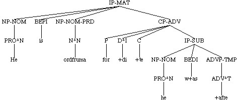
( (CODE <T02050000400,178.7>)
(IP-MAT (NP-NOM (PRO^N He))
(BEPI is)
(NP-NOM-PRD (N^N +ende))
(PP (P buton)
(NP-DAT (Q^D +alcere) (N^D geendunge)))
(, .)
(CP-ADV (P for) (D^I +don)
(C +te)
(IP-SUB (NP-NOM (PRO^N he))
(BEPI bi+d)
(ADVP-TMP (ADV^T +afre))
(ADJP-NOM-PRD (ADJ^N ungeendod))))
(. .)) (ID cocathom1,+ACHom_I,_1:178.7.7))
Degree clauses (CP-DEG)
Degree clauses are headed by the complementizer THAT and are always
associated with an adjective or adverb modified by a degree word or phrase,
either SWA or TO +TON/+TAM. The clause is often separated from its
antecedant and traced to the ADJP or ADVP constituent containing SWA or TO
+TON/+TAM.
(NODE (IP-SUB (NP-NOM (PRO^N hi))
(MDDI woldon)
(VB wircan)
(NP-ACC (NP-ACC (NUM^A ane) (N^A burh))
(CONJP (CONJ &)
(NP-ACC (NUM^A +anne) (N^A stypel)
(PP (P binnan)
(NP-DAT (D^D +t+are) (N^D byrig)))))
(, .)
(ADJP-ACC (ADV swa) (ADJ^A heahne)
(CP-DEG (C +t+at)
(IP-SUB (NP-NOM (PRO$ his) (N^N hrof))
(VBPS astige)
(PP (RP up) (P to)
(NP-DAT (N^D heofonum))))))))
(ID cocathom1,+ACHom_I,_1:185.204.212))
( (CODE <T02080005400,210.107>)
(IP-MAT-SPE (NP-NOM (QP-NOM (ADV Swa) (Q^N micel)
(CP-DEG-SPE *ICH*-1))
(N^N ege))
(VBDI stod)
(NP-DAT (N^D deoflum))
(PP (P from)
(NP (PRO eow)))
(, .)
(CP-DEG-SPE-1 (C +t+at)
(IP-SUB-SPE (NP-NOM (PRO^N hi))
(PP (P be)
(NP (PRO$ eowere) (N h+ase)))
(NP-ACC (D^A +ta) (RP+VBN^A ofsettan) (ADJ^A deofulseocan))
(VBDI forleton)))
(. :)) (ID cocathom1,+ACHom_I,_4:210.107.733))
(NODE (CP-REL-3 (WNP-NOM-4 (D^N Se))
(C 0)
(IP-SUB (NP-NOM *T*-4)
(VBD gerymde)
(NP (NP-GEN (NR^G Romana))
(N rice))
(ADVP (PP (P to)
(NP-DAT (D^I +tan)))
(ADV swi+de)
(, .)
(CP-DEG (C +t+at)
(IP-SUB (NP-DAT (PRO^D him))
(NP-NOM (Q^N eall) (N^N middaneard))
(RP+VBDI tobeah))))))
(ID cocathom1,+ACHom_I,_2:191.52.344))
The type in which there is no adjective or adverb involved but only the
degree element (SWA, TO +TON/+TAM God so loved the world that...) is
difficult to distinguish from the same construction expressing
purpose/result. Although in Modern English only the degree type can
separate, apparently this isn't the case in Old English, and so all
instances of this construction are labelled as Adverbial clauses.
Yes/no questions
In yes/no questions the IP-SUB is the only node dominated by the
CP-QUE. There is neither a wh- nor a complementizer position. This is the
standard way verb-movement to C (subj/aux inversion) is indicated in the
corpus (see also Direct questions and V1 conditionals).
(NODE (CP-QUE (IP-SUB (VBPI syl+t) <-- yes/no question
(NP-NOM (PRO^N he))
(NP-DAT (PRO^D him))
(NP-ACC (N^A stan))
(PP (P for)
(NP-DAT (N^D hlafe)))))
(ID cocathom1,+ACHom_I,_18:319.57.3451))
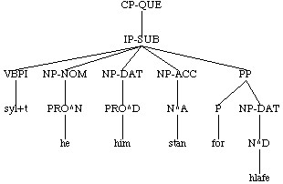
V1 conditionals
V1 conditionals have the same structure as yes/no questions but the dominating node is
CP-ADV. Note that the diagnostic feature of these clauses as well as yes/no
questions is that the IP-SUB is the first daughter of the CP, not that the
verb is the first daughter of the IP-SUB. The IP-SUB in some cases may have
an empty subject, which by default takes the first position in the IP,
putting the verb in second position.
(NODE (CP-ADV (IP-SUB (BEDI w+aron) <-- V1 conditional
(NP-NOM (PRO^N hi))
(PP (P on)
(NP (N ylde)))
(ADJP-NOM-PRD (ADJ^N deade))))
(ID coaelhom,+AHom_11:302.1649))
(NODE (IP-MAT-0 (CP-ADV (IP-SUB (NP-NOM *exp*) <-- empty subject first
(VBPS Getimie) by default
(NP (PRO us))
(ADVP (ADV tela))
(, .)
(PP (P on)
(NP (N lichaman)))))
(, .)
(CP-ADV (IP-SUB (NP-NOM *exp*)
(VBPI getymie)
(NP (PRO us))
(ADVP (ADV untela))))
(, .)
(ADVP-TMP (ADV^T symle))
(NP-NOM (PRO^N we))
(MDPI sceolon)
(NP-GEN (D^G +t+as))
(NP-DAT (NR^D Gode))
(VB +tancian))
(ID cocathom1,+ACHom_I,_18:322.133.3529))
Incomplete clauses
Incomplete IPs (IPX-)
A complete IP is one in which all the verbs are present, and an incomplete
one, therefore, one in which they are not. Incomplete IPs generally arise
from elision, but may have other sources. A missing
subject is not sufficient to render a clause incomplete as empty subjects are always added to otherwise
complete clauses if they are not present, nor is a missing object, although
in this case we do not indicate the lack in any way. Incomplete IPs have a
label beginning with IPX-, and ending with an equal-sign index such as =0,
e.g., IPX-MAT=0. They are as usual labelled for type (IPX-MAT=0, IPX-SUB=0,
IPX-INF=0, etc.). The equal-sign index indicates that somewhere within the
same token is a complete IP- (with the index -0) on which the incomplete
clause is patterned. The type of clause is not required to match; that is,
a subordinate clause can be equal-sign coindexed with a matrix clause,
etc. All types of IPs (-MAT, -SUB, -INF, -SMC), as well as PTPs may be
incomplete. Within an incomplete clause constituents are parsed to the
extent possible but in general no effort is made to reconstruct any
structure beyond what is present on the surface. The point of this division
is to make it easy to exclude incomplete clauses from a search if so
desired.
( (CODE <T03020002500,55>)
(IP-MAT (IP-MAT-0 (NP-NOM (Q^N Sume)) <-- complete clause
(VBPI ga+d)
(PP (P on)
(NP-DAT (NUM^D twam) (N^D fotum))))
(, ,)
(IPX-MAT=0 (NP-NOM (Q^N sume)) <-- incomplete clause patterned on it
(PP (P on) all verbs missing
(NP-DAT (NUM feower) (N^D fotum))))
(. .)) (ID coaelive,+ALS_[Christmas]:55.42))
(NODE (IP-SUB (IP-SUB-0 (NP-NOM (PRO^N hi))
(PP (P on)
(NP-DAT (38 N^D fante)))
(VBN^N gefullode)
(BEDI wurdon))
(, ,)
(CONJP (CONJ and)
(IPX-SUB-CON=0 (NP-DAT (ADJ^D mynsterlicre) (N^D drohtnunge))
(ADVP (ADV dearnunge))
(VBN^N ge+teodde)))) <-- finite verb missing
(ID coaelive,+ALS_[Eugenia]:87.240))
( (IP-MAT-0 (ADVP-TMP (ADV^T nu))
(MDP wylle)
(NP-NOM (PRO^N we))
(NP (PRO eow))
(NP-ACC (Q^A sum) (N^A +ting))
(PP (P be)
(NP (PRO$ eowre) (N sawle)))
(VB s+accgan)
(ADVP (ADV sceortlice))
(CP-ADV (P gif)
(C 0)
(IPX-SUB=0 (NP-NOM (PRO^N we)) <-- sub. clause patterned on matrix
(MDPI magon))) <-- main verb missing
(. .)) (ID coaelive,+ALS_[Christmas]:84.69))
( (CODE <T03290005900,256>)
(IP-MAT (ADVP-TMP (ADV^T +Ta))
(VBDI het)
(NP-NOM (D^N se) (N^N dema))
(ADVP-TMP (ADV^T eft))
(IP-INF (IP-INF (VB don)
(NP-ACC (PRO^A hine))
(PP (P of)
(NP-DAT (D^D +t+are) (N^D hencgene))))
(, ,)
(CONJP (CONJ and)
(IP-INF-0 (VB l+adan) <-- complete infinitive
(NP-ACC (PRO^A hi) (Q^A ealle) (NUM^A +try))
(PP (P to)
(NP-DAT (ADJ^D leohtleasum) (N^D cwearterne)))))
(, ,)
(CONJP (CONJ and) <-- incomplete, verb missing
(IPX-INF=0 (NP-ACC (Q fela) (ADJ^A o+dre) (ADJ^A cristene))
(PP (P to)
(NP-DAT (D^D +tam) (ADJ^D cwealmb+arum) (N^D huse))))))
(. .)) (ID coaelive,+ALS_[Denis]:256.5933))
There are two types of incomplete clauses, those which are labelled -PRN
and those which are not (IPX-MAT=0 vs. IPX-MAT-PRN=0). The distinction is
discussed under IP conjunction and Right-node raising.
For a more details about the use of IPX in particular constructions, see
the Reference Manual: Elision, Restarts, and Comparative clauses.
Incomplete PTPs (PTPX-)
Incomplete PTPs also occur. The definition is the same as for incomplete
IPs, that not all the verbal material is present. Since PTPs only ever have
one (non-finite) verb, PTPX- never includes a verb.
(NODE (PTP-NOM (PTP-NOM-0 (PP (P on)
(NP-DAT (N^D w+atere)))
(VBN^N gedyfed))
(CONJP (CONJ &)
(PTPX-NOM=0 (PP (P +after)
(NP-DAT (D^D +tam)))
(PP (P on)
(NP-DAT (N^D ele)))))
(CONJP (CONJ &)
(PTP-NOM (ADVP-TMP (ADV^T sy+t+tan))
(VBN^N aled)
(PP (P on)
(NP-ACC (D^A +ta) (ADJ^A saran) (N^A stowe))))))
(ID coquadru,Med_1.1_[de_Vriend]:8.1.321))
Incomplete CPs (CPX-)
Incomplete CPs fall into a number of distinct types, the most common of
which is a certain type of comparative which we have decided
not to annotate in full. Details can be found in the reference manual Reference Manual:
Incomplete CPs.
Summary review
One of the easiest ways to miss data when searching is to make the search
terms too specific. For instance, while all matrix clauses in the corpus
have a label beginning with IP-MAT, some are also additionally labelled as
direct speech (IP-MAT-SPE). A search using IP-MAT as a search term, will
thus not find all the IP-MATs in the corpus, whereas a search using IP-MAT*
(where * is the CorpusSearch wild-card that matches anything) will. This
section is intended to summarize (and review) the information contained in
the previous sections in such a way as to help guard against inadvertant
omissions.
Clauses
Any clause that contains a wh-word or complementizer (overt or not) is
labelled CP. All CPs are additionally labelled for type (CP-REL = relative
clause, CP-ADV = adverbial clause, etc.). The IP complement of a
complementizer is always labelled IP-SUB (subordinate clause). A conjunct
subordinate clause is further identified as IP-SUB-CON. This makes it
possible to distinguish conjunct from non-conjunct clauses in searches
without searching outside the IP.
Any finite IP that is not dominated by a CP is labelled IP-MAT (matrix IP).
Other types of IPs include infinitives (IP-INF(-NCO)) and small clauses
(IP-SMC). As with CPs, all IPs are labelled for type.
Incomplete clauses are labelled IPX-, PTPX- or CPX-. In general, when
investigating clausal syntax, only complete clauses should be included in
the search (i.e., use IP-* rather than IP* as a search term). For
investigations focussing on smaller constituents, PPs or NPs, etc. this
restriction is unnecessary.
While most clause labels, CP or IP, have only one extended label indicating
function, occasionally there is more than one (IP-INF-NCO = non-complement
infinitive). In addition, all CPs and IPs in a direct speech sequence have
the final label -SPE, and appositive or parenthetical clauses, both
indicated by the label -PRN, are not uncommon. The clauses may also have
some kind of index, -x or -# (where -# is any number). Using
the wild card * (see CorpusSearch Reference
Manual: Wild cards), as IP-MAT* or CP-REL*, will extract all
constituents that begin with a particular label and end with anything. If
such a search turns up too much data, as, for instance, if
appositives/parentheticals are not wanted, then a list specifying only the
desired alternatives can be used, e.g.,
IP-MAT|IP-MAT-SPE|IP-MAT-#|IP-MAT-SPE-#. In the first instance it is
always safer to use the wild card to make sure you don't miss data. Once
you are sure you know what the possibilities are, the data can be narrowed
down with a more specific search if desired.
The full list of labels beginning with IP is given in the following
table. The labels in parens are optional, and those separated by a slash,
mutually exclusive. These labels may be followed by one or more of the
final labels (-PRN, -SPE, -x, -#, where # stands for a number) in the
order given, although not all the final labels apply to every initial label.
IP-MAT (-PRN -SPE -x -#)
IP-SUB(-CON)
IP-INF(-NCO/-ABS/-EXL/-LFD/-SBJ)
IP-SMC
The -0 index that appears on IPs (e.g., IP-MAT-0, IP-MAT-SPE-0, IP-SUB-0)
indicates that it is a pattern for another clause (labelled IPX-MAT=0,
etc.) in which elision has taken place. The -x index indicates that the
clause is linked to an expletive subject. Clauses with the -0 or -x index
are therefore not themselves in any way special and should normally be
included in any search of IPs.
The basic pattern for CPs (apart from free relative clauses CP-FRL, for
which see below)) is given below, where TYPE stands for one of the primary
function labels (-ADV, -CAR, -CLF, -CMP, -DEG, -EOP, -EXL, -QUE, -REL,
-THT. A small number of secondary functions (-LFD, -ADT, -EXL, -SBJ) may
appear in conjunction with some of the CP functions (e.g., -LFD, and -SBJ
appears on CP-QUE and CP-THT, -ADT appears only on CP-QUE, etc.). As with
IPs, these labels may be followed by one or more of the final labels (-PRN,
-SPE, -x, -#, where # stands for a number) in the order given, although not
all the final labels apply to every initial label.
CP-TYPE (-LFD/-ADT/-EXL/-SBJ) (-PRN -SPE -x -#)
Free relatives, although formally CPs, function as NPs in our system, and
thus in addition to their CP function label (-FRL) may take any of the
function labels that NPs take (e.g., -ADT, -DIR, -LFD, -LOC, -PRD, -SBJ,
-TMP), optionally followed as usual one or more of the final labels (-PRN,
-SPE, -#) in the order given (-x does not apply to CP-FRL).
CP-FRL (-ADT/-DIR/-LFD/-LOC/-PRD/-SBJ/-TMP) (-PRN -SPE -#)
Thus it is important not to use too restricted a label in searching unless
you are sure that you want a restricted set of the possibilities. In most
cases using the wild-card * after the initial label (IP-*, IP-MAT*,
IP-SUB*, CP-*, etc.) will give the desired results.
Noun phrases
In the YCOE the primary extended label for noun phrases is case. It indicates
function for arguments as follows:
NP-NOM subject
NP-ACC object
NP-GEN object
NP-DAT object
NP object (case ambiguous)
An NP that does not fill the function assigned for its case in the above
table has an extended function label. For nominatives this is usually -PRD
(predicate), -LFD (left-dislocation), -VOC (vocative), or more rarely, -ADT
(adjunct). Likewise, accusative or dative subjects (e.g., in infinitives,
small clauses, and absolutes) have the -SBJ (subject) function label
following case NP-ACC-SBJ. Some of the extended labels apply (or may
apply) to arguments (as -PRD, -SBJ, -RFL (reflexive)) while others indicate
that the NP is not an argument (as -LFD (left-dislocation) and -ADT
(adjunct)). Any NP that is not an argument has either the final extended
label -ADT (adjunct), e.g., NP-DAT-ADT, or a more specific non-argument
label like -TMP (temporal), NP-ACC-TMP or -LFD (left-dislocation),
NP-NOM-LFD, NP-LFD.
Argument function labels:
subject -SBJ
reflexive -RFL (non-argument when followed by -ADT)
resumptive -RSP
predicate -PRD
Non-argument function labels:
adjunct -ADT
left-dislocation -LFD
vocative -VOC
temporal -TMP
reflexive -RFL (when followed by -ADT)
locative -LOC (rare)
Usually an NP with a number index, e.g., NP-ACC-1, is not an argument of
the IP in which it appears; the index indicates that it has been traced to
another constituent in which it is to be interpreted.
( (IP-MAT-SPE (NEG Ne)
(VBP hate)
(NP-NOM (PRO^N ic))
(NP-ACC-1 (PRO^A eow)) <-- subject of small clause
(ADVP (NEG+ADV na))
(IP-SMC-SPE (NP-ACC-SBJ *ICH*-1) <-- trace
(NP-PRD (N +teowan)))
(. ,)) (ID coaelive,+ALS_[Eugenia]:84.260))
( (CODE <T03040003700,123>)
(IP-MAT (NP-ACC-1 (D^A +Tone) (ADJ^A o+derne) (N^A d+al) <-- object of infinitive
(CP-EOP *ICH*-2))
(NP-NOM (PRO^N he))
(VBD dyde)
(IP-INF (NP-ACC *ICH*-1) <-- trace
(VB gehealden)
(PP (P mid)
(NP-DAT (PRO^D him))))
(CP-EOP-2 (WNP-3 0)
(IP-INF-NCO (NP *T*-3)
(TO to)
(VB^D bebyrgenne)
(PP (P +after)
(NP-DAT (PRO$ his) (N^D for+dsi+de)))))
(. .)) (ID coaelive,+ALS_[Basil]:123.553))
The exception to this is subjects which may be indexed to indicate raising
from an argument position (either subject or object) in a lower clause, as
for instance with passives involving infinitives or small clauses (The
book is to read i.e., the book is to be read, she is
considered intelligent).
( (CODE <T03050005100,139>)
(IP-MAT (NP-NOM-1 (D^N +Teos) (N^N race)) <-- subject of matrix
(BEPI is)
(ADJP-NOM-PRD (ADV swi+de) (ADJ^N langsum)
(IP-INF-NCO (NP *-1) <-- object of infinitive
(ADVP (ADV fullice))
(TO to)
(VB^D gereccenne)))
(. ,)) (ID coaelive,+ALS_[Julian_and_Basilissa]:139.1044))
(NODE (IP-MAT-0 (CONJ and)
(NP-NOM-1 (D^N +tas) (NUM feower) (FP ana))
(BEPI syndon)
(IP-INF (NP *-1)
(TO to)
(RP+VB^D underfonne)
(PP (P on)
(NP-DAT (ADJ^D geleaffulre) (N^D gela+dunge)))))
(ID coaelive,+ALS_[Mark]:219.3358))
( (CODE <T02080014500,215.276>)
(IP-MAT (ADVP (ADV So+dlice))
(ADVP-TMP (ADV^T sy+d+dan))
(BEDI w+as)
(NP-NOM-1 (PRO$ his) (N^N byrgen)) <-- subject of matrix
(VBN gemet)
(, :)
(IP-SMC (NP-SBJ *-1) <-- subject of small clause
(PP (P mid)
(NP (FW manna)))
(VBN afylled))
(. .)) (ID cocathom1,+ACHom_I,_4:215.276.940))
A subject with an -x index (NP-NOM-x) is an expletive subject, overt or
empty, linked to a clause.
( (IP-MAT (CONJ ac)
(NP-NOM-x (PRO^N hit)) <-- overt expletive subject
(NEG+BEPI nis)
(VBN awriten)
(CP-THT-x (C +t+at) <-- extraposed subject clause
(IP-SUB (NP-NOM (PRO^N hi))
(PP (P mid)
(NP-DAT (N^D leohte)))
(VBDI comon)))) (ID cocathom1,+ACHom_I,_2:193.109.439))
( (CODE <T02060004600,193.109>)
(IP-MAT (NP-NOM-x *exp*) <-- empty expletive subject
(NP-DAT (D^D +Tam) (N^D lareowe))
(VBPI gedafena+d)
(CP-THT-x (C +t+at) <-- extraposed subject clause
(IP-SUB (NP-NOM (PRO^N he))
(ADVP-TMP (ADV^T symle))
(ADJP-NOM-PRD (ADJ^N wacol))
(BEPS sy)
(PP (P ofer)
(NP (NP-GEN (NPR^G Godes))
(N eowede)))
(, .)
(CP-ADV (C +t+at)
(IP-SUB (NP-NOM (D^N se) (ADJ^N ungesewenlica) (N^N wulf))
(NP-ACC (NP-GEN (NPR^G Godes))
(N^A scep))
(NEG ne)
(RP+VBPS tostence)))))
(. .)) (ID cocathom1,+ACHom_I,_2:193.109.437))
Thus the subject of a finite clause may be labelled in the following ways.
NP-NOM-RSP resumptive
NP-NOM-x expletive
NP-NOM-# raised from a lower clause (where # stands for any number)
NP-NOM-x-# subject in the "(it) is to wit" construction
NP-NOM all other subjects of finite clauses
Subjects of non-finite clauses have the final function label -SBJ (e.g.,
NP-ACC-SJB, NP-DAT-SBJ, etc.).
Likewise, object arguments have the following possible labels, where
(-CASE) stands for -ACC, -GEN, -DAT, or nothing (i.e., NP(-CASE)-RFL stands
for NP-ACC-RFL, NP-DAT-RFL, NP-GEN-RFL or NP-RFL). In copular constructions
and some other cases (see PREDICATES) the non-subject argument is labelled
-PRD; it may be nominative, accusative or genitive.
NP(-CASE)-RSP resumptive
NP(-CASE)-RFL reflexive
NP(-CASE)-PRD predicate
NP(-CASE) all other objects
Within non-sentential constituents (anything other than IP and PTP), NPs
are only labelled for case (if appropriate) and extent (-EXT). No
distinction is made between complements and adjuncts, although in fact most
NPs contained within another constituent are complements of the head of
that constituent.
(NP-ACC (NP-GEN (NPR^G Godes))
(N^A scep))
(NP-ADT (NP-GEN (D^G +tises) (N^G d+ages))
(N m+ar+de))
(NP-ACC (D^A +da) (ADJR^A swi+dran) (N^A healfe)
(NP-DAT (D^D +t+am) (N^D ingange)))
(NP-NOM (PRO$ his) (ADJ^N manfullan) (N^N behat)
(NP-DAT (D^D +tam) (ADJ^D hetolan) (N^D deofle)))
(NODE (IP-SUB (NP-NOM (NP-GEN (N^G preosta))
(Q^N gehwilc))
(CONJ +ag+der)
(HVPS h+abbe)
(NP-ACC (CONJ ge)
(NP-ACC (N^A fulluhtele))
(CONJP (CONJ ge)
(NP-ACC (NP-DAT (ADJ^D seocum)) <-- "for the sick"
(N^A smyrels)))))
(ID cocanedgD,WCan_1.1.1_[Fowler]:69.77))
(ADVP-TMP (NP-DAT-EXT (NUM^D +trittigum) (N^D nihtum)) <-- 30 nights earlier
(ADV^T +ar))
(ADJP-NOM (NP-GEN-EXT (NUM eahta) (N^G nihta)) <-- 8 nights old
(ADJ^N eald))
(PP (NP-DAT-EXT (NUM^D syxtygum)
(NP-GEN (N^G wintra)))
(P +ar)
(NP (NP-GEN (NPR^G Cristes))
(N cyme)))
(PP (NP-ACC-EXT (NUM^A twa) (N^A tida))
(P ofer)
(NP-DAT (N^D none)))
(PP (NP-ACC-EXT (NUM^A twa) (N^A mila))
(P fram)
(NP-DAT (D^D +d+are) (N^D ceastre)
(NP-GEN (ADJ^G turoniscre) (N^G +deode))))
Conjunction
Phrasal conjunction
The basic form of conjunction is as follows:
(XP (XP first_conjunct)
(CONJP (CONJ conjunction)
(YP second_conjunct)))
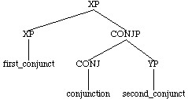
The conjunction phrase (CONJP) is sister to the first conjunct, while the
head of the CONJP (the conjunction) takes the second conjunct as a
complement. This applies to the conjunction of all phrasal categories
except IP, which is a special case (see IP
conjunction). Conjunction of word-level categories (e.g., verbs) and
cases with potential shared modifiers are also treated slightly
differently. See Word-level
conjunction and Conjunction with shared
modifiers.
(NP-NOM (NP-NOM (NUM^N an) (N^N anginn))
(CONJP (CONJ &)
(NP-NOM (NUM^N an) (ADJ^N +almihtig) (NR^N God))))
(ADJP-NOM (ADJP-NOM (NP-DAT (PRO^D us))
(ADJ^N unasecgendlic))
(, ,)
(CONJP (CONJ &)
(ADJP-NOM (ADJ^N halig)
(NP-DAT (PRO$ his) (N^D halgum)))))
(ADVP (ADVP (ADV swa) (ADV wynsumlice))
(CONJP (CONJ and)
(ADVP (ADV swa) (ADV werodlice))))
(PP (PP (P be)
(NP (NP-GEN (D^G +t+as) (N^G H+alendes))
(N acennednysse)))
(, ,)
(CONJP (CONJ +ag+der) (CONJ ge)
(PP (P be)
(NP (PRO$ his) (N godcundnysse))))
(CONJP (CONJ ge)
(PP (P be)
(NP (PRO$ his) (N menniscnysse)))))
Word-level conjunction
If all the conjuncts are single words, all internal structure is
omitted.
(NP-NOM (NR^N Melchisedech) (CONJ and) (NR^N Aaron))
(NP-DAT (N^D gn+attum) (CONJ &) (N^D fleogum))
(ADJP-DAT (ADJ^D ricum) (CONJ &) (ADJ^D heanum))
(ADVP (ADV gemetlice) (, ,) (ADV rihtlice) (CONJ and) (ADV arf+astlice))
The conjunction of word-level categories (e.g. verbs) is similar,
except that the dominating category is also word-level.
( (IP-MAT (CONJ and)
(NP-NOM (PRO^N he))
(ADVP-TMP (ADV^T +ta))
(, ,)
(ADJP-NOM (ADJ^N gewittig))
(, ,)
(ADVP (ADV wel))
(VBDI (VBDI spr+ac) (CONJ and) (VBD gehyrde)) <-- conjoined verbs
(. ,))
(ID coaelhom,+AHom_4:7.521))
( (IP-MAT-SPE (CONJ and)
(NP-NOM (PRO^N he))
(NEG ne)
(BEPI by+d)
(VBN (VBN gescreadod) (CONJ o+d+de) (VBN bedolfen))
(. ,))
(ID coaelhom,+AHom_3:64.450))
(NODE (IP-SUB (NP-NOM (PRO$ his) (N^N lichama))
(MDPS (MDPS mote) (CONJ o+t+te) (MDPS m+age)) <-- conjoined modals
(NP-ACC (D^A +ta) (N^A synbyr+tenna))
(PP (P on)
(NP-DAT (N^D eor+tscrafe)))
(VB gebetan))
(ID coblick,HomU_20_[BlHom_10]:109.52.1389))
( (IP-MAT (CONJ &)
(NP-NOM (N^N englas))
(VBDI stigon)
(RP (RP up) (CONJ &) (RP ofdune)) <-- conjoined particles
(PP (P on)
(NP-ACC (D^A +da) (N^A hl+adre)))
(. .))
(ID cocura,CP:16.101.19.666))
For the purposes of conjunction, quantifiers and participles count as
adjectives, meaning that an ADJP may dominate a quantifier (or QP) or
participle (or PTP) if it is conjoined to an adjective or ADJP.
(ADJP-NOM (ADJP-NOM (ADJ^N gesta+telf+aste))
(CONJP (CONJ &)
(PTP-NOM (VBN^N $gestrangode) (ADV $swi+de))))
(ADJP-DAT (ADJ^D arleasum) (CONJ and) (VBN^D forscyldegodum))
(ADJP-NOM (QP-NOM (ADV swi+de) (Q^N micel))
(CONJP (CONJ and)
(ADJP-NOM (ADV swi+de) (ADJ^N m+are))))
(ADJP-NOM (Q^N lytel) (CONJ and) (ADJ^N iung))
Likewise, verbs which are ambiguous for mood (VBD, VBP, etc.) freely
conjoin with verbs specified for mood, and verbs with cliticized particles
(RP+VBPI, etc.) with other types of verbs. The dominating label for
mismatched moods is the the label which is specified for mood. When
conjoined the particle of a particle verb is not reflected on the
dominating label, even if both of the conjuncts are particle verbs.
(VBDI (VBDI spr+ac) (CONJ and) (VBD gehyrde))
(VB (RP+VB undergytan) (CONJ and) (VB gemunan))
(VBDI (RP+VBDI tobr+ac) (CONJ and) (RP+VBD tobrytte))
Conjunction with shared modifiers
In cases where the first conjunct includes modifiers which may also apply
to the second conjunct ( old women and men), and thus the phrase
level of the second conjunct is not clear, the following structure is used
where YX is NX, ADJX or ADVX. Note that in this case the CONJP is sister to
the head of the first conjunct rather than to the first conjunct itself.
(XP (X first_conjunct)
(CONJP (CONJ conjunction)
(YX second_conjunct)))
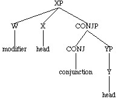
(NP-NOM (NEG+Q^N nan) (N^N unrihtwisnyss)
(CONJP (NEG+CONJ ne)
(NX-NOM (N^N yfel))))
(ADJP-NOM (ADV swi+de) (ADJ^N leoht)
(CONJP (CONJ and)
(ADJX-NOM (ADJ^N wynsum))))
(ADVP (ADV hwene) (ADVR heardor)
(CONJP (CONJ &)
(ADVX (ADVR strongor))))
This also applies in cases of an initial possessive genitive NP (NP-GEN)
with conjoined heads following.
(NODE (NP-NOM-PRD (NP-GEN (PRO^G heora) (Q^G begra))
(N^N Willa)
(CONJP (CONJ and)
(NX-NOM (N^N Lufu))))
(ID coaelhom,+AHom_6:227.990))
(NP (NP-GEN (NR^G Godes))
(N anlicnesse)
(CONJP (CONJ and)
(NX (N gelicnesse))))
Post-head modifiers may also be shared and include, as well as genitives,
relative clauses, various kinds of appositives and parentheticals, degree
clauses. They are immediately dominated by the root node of the
conjunction. Note that this means that the shared modifier is not actually
inside any of the conjuncts. Searches for shared post-head modifiers must
be carefully constructed.
(XP1 (XP2 first_conjunct)
(CONJP (CONJ and)
(XP3 second_conjunct))
(YP shared_modifier))
(NODE (NP-NOM-PRD (NP-NOM (D^N seo) (Q^N micele) (N^N Lufu))
(CONJP (CONJ and)
(NP-NOM (D^N se) (ADJ^N mihtiga) (N^N Willa)))
(NP-GEN (NP-GEN (D^G +t+as) (N^G F+ader)) <-- genitive NP
(CONJP (CONJ and)
(NP-GEN (D^G +t+as) (N^G Suna)))))
(ID coaelhom,+AHom_7:210.1155))
(NODE (NP-NOM-PRD (NP-NOM (ADJ^N gr+adig) (N^N gitsere))
(, ,)
(CONJP (CONJ and)
(PTP-NOM (NP (PRO$ his) (N galnysse))
(RP+VBN^N under+teod)))
(, ,)
(NP-NOM-PRN (NP-GEN (N^G deofles)) <-- appositive
(N^N +teowetlincg)))
(ID coaelive,+ALS[Agatha]:5.2014))
(NODE (NP-DAT (NP-DAT (D^D +tam) (ADJ^D wisum) (N^D bocerum))
(CONJP (CONJ and)
(NP-DAT (D^D +tam) (N^D Sunderhalgum)))
(CP-REL (WNP-NOM-1 0) <-- relative clause
(C +te)
(IP-SUB (NP-NOM *T*-1)
(VBDI heoldon)
(NP (PRO$ his) (N +a)))))
(ID coaelhom,+AHom_3:89.461))
(NODE (IP-MAT (NP-NOM (D^N +T+at) (N^N folc))
(BEDI wear+d)
(ADVP-TMP (ADV^T +da))
(ADJP-NOM-PRD (ADJP-NOM (ADV swa) (ADJ^N fagen)
(NP-GEN (PRO$ his) (N^G cystignessa)))
(CONJP (CONJ and)
(ADJP-NOM (ADV swa) (ADJ^N +tancful)))
(CP-DEG (C +t+at) <-- degree complement
(IP-SUB (NP-NOM (PRO^N hig))
(VBDI worhton)
(NP-DAT-ADT (PRO^D him))
(NP-ACC (NUM^A ane) (N^A anlicnesse))
(PP (P of)
(NP-DAT (N^D are))))))
(. .))
(ID coapollo,ApT:10.14.178))
(NODE (IP-SUB (NP-NOM (PRO^N hie))
(HVPI habba+d)
(NP-ACC (NP-ACC (D^A +da) (N^A arodnesse))
(CONJP (CONJ &)
(NP-ACC (D^A +da) (N^A bieldo)))
(CP-THT (C +d+at) <-- that-clause
(IP-SUB (NP-NOM (PRO^N hie))
(MDPI magon)
(NP-ACC (N^A anweald))
(HV habban)))))
(ID cocura,CP:5.41.17.224))
(NODE (IP-SUB (NP-NOM (PRO^N he))
(NP-ACC (NP-ACC (NR^A Adam))
(CONJP (CONJ and)
(NP-ACC (NR^A Efan)))
(CONJP (CONJ and)
(NP-ACC (PRO$ heora) (N^A ofspring)))
(NP-ACC-PRN *ICH*-3)) <-- a constituent may be traced
(VBDI genam) to this position
(, ,)
(NP-ACC-PRN-3 (QP-ACC (ADV swi+de) (Q^A micelne))
(N^A d+al))
(, ,)
(PP (P of)
(NP-DAT (D^D +tam) (ADJ^D manfullum) (N^D deofle))))
(ID coaelhom,+AHom_4:188.627))
Note that a modifier shared by the complements of conjoined PPs still
appears immediately dominated by the root of the conjunction, which is the
highest PP.
(NODE (PP (PP (P mid)
(NP-DAT (N^D wife)))
(CONJP (CONJ and)
(PP (P mid)
(NP-DAT (N^D cildum))))
(CONJP (CONJ and)
(PP (P mid)
(NP-DAT (ADJ^D gesibbum) (N^D mannum))))
(CONJP (CONJ and)
(PP (P mid)
(NP-DAT (N^D +ahtemannum))))
(, ,)
(NP-PRN (NUMP (Q^G ealles) (NUM twelf) (NUM hundred)
(CONJP *ICH*-1))
(NP-GEN (N^G manna))
(CONJP-1 (CONJ and) (NUM fifti))))
(ID coaelhom,+AHom_24:37.3779))
(NODE (PP (PP (P on)
(NP-DAT (D^D +d+are) (ADJ^D ealdan) (N^D +a)))
(CONJP (CONJ and)
(PP (P on)
(NP-DAT (D^D +d+are) (ADJ^D niwan) (, ,) (N^D gecy+dnysse))))
(, ,)
(IP-MAT-PRN (NP-NOM (D^N +t+at))
(BEPI is)
(XP (NP (N +a) (CONJ and) (N godspel)))))
(ID coaelive,+ALS_[Maccabees]:61.4866))
IP Conjunction
The conjunction of matrix IPs is a special case. Each clause containing a
tensed verb is treated as a separate token even if the clauses are
conjoined. In these cases the conjunction itself is just treated as a
sentence constituent, rather than heading a CONJP.
( (CODE <T02050000700,178.11>)
(IP-MAT (NP-NOM (PRO^N He))
(VBPI awyh+d)
(NP-ACC (Q^A ealle) (N^A duna))
(PP (P mid)
(NP-DAT (NUM^D anre) (N^D handa)))
(. :)) (ID cocathom1,+ACHom_I,_1:178.11.11))
( (IP-MAT (CONJ &) <-- sentential conjunction
(NP-ACC (Q^A ealle) (N^A eor+dan))
(NP-NOM (PRO^N he))
(VBPI belic+d)
(PP (P on)
(NP (PRO$ his) (N handa)))) (ID cocathom1,+ACHom_I,_1:178.11.12))
IPs are conjoined like other phrases when they are the complements of a
subordinator. Note the second conjunct has the label IP-SUB-CON.
(NODE (CP-THT (C +t+at)
(IP-SUB (IP-SUB (NP-NOM (D^N +da) (ADJ^N w+alhr+awan))
(NP-ACC (PRO^A hine))
(VBDI (VBDI genamon) (, .) (CONJ &) (VBDI gebundon)))
(, :)
(CONJP (CONJ &)
(IP-SUB-CON (NP-NOM *con*)
(PP (P on)
(NP (N rodeh+ancgene)))
(VBDI acwealdan)))))
(ID cocathom1,+ACHom_I,_1:188.275.288))
If elision has taken place in the second (or subsequent) conjunct, the IPX
label is used with equal-sign coindexing, which indicates that the clause
with the equal-sign index is incomplete but may be reconstructed on the
basis of the coindexed clause(see Incomplete
clauses).
(NODE (CP-ADV-SPE (P +ar) (D^I +dan)
(C +te)
(IP-SUB-SPE (IP-SUB-SPE-0 (NP-NOM (PRO^N hit))
(VBN gefl+aschamod)
(BEDI w+as))
(, .)
(CONJP (CONJ &)
(IPX-SUB-CON-SPE=0 (PP (P to)
(NP-DAT (N^D menn)))
(BEN geworden)))))
(ID cocathom1,+ACHom_I,_2:196.178.433))
The same is true of matrix clauses when the tensed verb of the second
conjunct has been elided. Again equal-sign coindexing is used (see Incomplete clauses).
( (CODE <T02080014800,216.280>)
(IP-MAT (IP-MAT-0 (ADVP-LOC (ADV^L +D+ar))
(BEPI beo+d)
(NP-NOM (Q fela)
(NP-GEN (N^G tacna)))
(VBN^N +ateowede))
(, .)
(CONJP (CONJ &)
(IPX-MAT=0 (NP-NOM (ADJ^N untrume))
(VBN^N geh+alde)))
(, :)
(CONJP (CONJ &)
(IPX-MAT=0 (PP (P fram)
(NP-DAT (Q^D eallum) (N^D frecednyssum)))
(VBN^N alysede)
(, .)
(PP (P +turh)
(NP (NP-GEN (D^G +d+as) (N^G apostoles))
(N +tingunge)))))
(. .)) (ID cocathom1,+ACHom_I,_4:216.280.886))
( (IP-MAT (IP-MAT-0 (CONJ &)
(NP-NOM *con*)
(VBD sealde)
(NP-DAT (D^D +dam) (N^D fixum))
(NP-ACC (N^A sund)))
(, .)
(CONJP (CONJ &)
(IPX-MAT=0 (NP-DAT (D^D +dam) (N^D fugelum))
(NP-ACC (N^A fliht))))
(. .)) (ID cocathom1,+ACHom_I,_1:182.106.104))
Right-node raising
Right-node raising and various other clause-internal parenthetical
constructions involving elision are handled in essentially the same way,
except that the incomplete clause is immediately dominated by the complete
IP and not conjoined. It also has a -PRN (parenthetical) label. This is
used in all cases in which an argument or part of an argument (an
extraposed relative clause, appositive, etc.) of the first or (more
commonly) both verbs follows the second verb, or when no arguments follow
but the finite verb is elided leaving either a non-finite verb or no verb
at all. When only adjuncts follow a second finite verb it is treated as IP conjunction with the adjuncts treated as
members of the second conjunct.
( (IP-MAT-0 (NEG+CONJ ne)
(NP-NOM (PRO^N hi))
(NEG ne)
(MDPI magon)
(ADVP-TMP (ADV^T nu))
(IPX-MAT-PRN=0 (NEG+CONJ ne)
(NP-NOM (PRO^N hi))
(NEG+MDPI nella+d))
(NP-ACC (NEG+Q^A nane) (N^A synne)) <-- argument follows
(VB gewyrcan) second finite verb
(. .)) (ID cocathom1,+ACHom_I,_1:180.47.49))
( (CODE <T02140012100,256.235>)
(IP-MAT-0 (NP-NOM (D^N Se) (N^N sunu) (FP ana)
(CP-REL *ICH*-1))
(RP+VBDI underfeng)
(NP-ACC (D^A +ta) (N^A menniscnesse))
(, .)
(IPX-MAT-PRN=0 (CONJ &)
(HVD h+afde)
(NP-ACC (N^A annginn)))
(, .)
(CP-REL-1 (WNP-NOM-2 (D^N se)) <-- part of argument follows
(C +de) second finite verb
(IP-SUB (NP-NOM *T*-2)
(ADVP-TMP (ADV^T +afre))
(BEDI w+as)))
(. .)) (ID cocathom1,+ACHom_I,_9:256.235.1785))
( (CODE <T02270005900,320.92>)
(IP-MAT-0 (ADVP-TMP (ADV^T Nu))
(MDP sceule)
(NP-NOM (PRO^N we))
(VB cnucyan)
(, .)
(IPX-MAT-PRN=0 (CONJ &)
(VB hryman) <-- finite verb elided
(PP (P to)
(NP-DAT (NR^D Criste))))
(, :)
(CP-ADV (P for) (D^I +dan) <-- adjunct
(C +te)
(IP-SUB (NP-NOM (PRO^N he))
(MDP wyle)
(NP (PRO us))
(VB ti+dian)
(, :)
(PP (ADV Swa) (P swa)
(CPX-CMP (IPX-SUB (NP-NOM (PRO^N he)
(ADJP-NOM (ADJ^N sylf)))
(VBDI cw+a+d))))))
(. .)) (ID cocathom1,+ACHom_I,_18:320.92.3479))
Searching conjunction structures
CorpusSearch has a
special function for searching conjoined structures. This makes it possible
to search inside a conjoined phrase as if it wasn't conjoined. Consider the
following two structures (the second is fictional). In both cases the
NP-NOM-PRD contains a number (NUM), but in the first case the NP-NOM-PRD
immediately dominates the number, while in the second it doesn't because of
the intervening NP-NOM of the conjunction structure. In most cases,
however, the user will want to find both these constructions in the same
search. To this end CorpusSearch (unless told not to) will treat these two
NPs in the same way, that is, as if the NP-NOM-PRD immediately dominated
the number in both cases. See CorpusSearch
Lite and the CorpusSearch
Reference Manual for more details.
( (IP-MAT (CONJ ac)
(NP-NOM (PRO^N hi))
(NEG ne)
(BEPI synd)
(ADVP (NEG+ADV na))
(NP-NOM-PRD (NUM^N +treo) (N^N anginnu))
(. ,)) (ID coaelive,+ALS_[Christmas]:16.16))
( (IP-MAT (CONJ ac)
(NP-NOM (PRO^N hi))
(NEG ne)
(BEPI synd)
(ADVP (NEG+ADV na))
(NP-NOM-PRD (NP-NOM (NUM^N +treo) (N^N anginnu))
(CONJP (CONJ ac)
(NP-NOM (NUM^N an) (N^N anginn))))))
Complete list of labels
Part-of-Speech Labels
Nominals and Pronominals
N Common noun, singular or plural
NR Proper noun, singular or plural
MAN Indefinite "man"
PRO Personal pronoun
PRO$ Possessive pronoun
Adjectives and Adverbs
ADJ Adjective
ADJR Comparative Adjective
ADJS Superlative Adjective
ADV Adverb
ADVR Comparative Adverb
ADVS Superlative Adverb
Quantifiers and numerals
Q Quantifier
QR Comparative Quantifier
QS Superlative Quantifier
NUM Numeral
Wh-words
WPRO Wh-pronoun
WADJ Wh-adjective
WADV Wh-adverb
WQ WHETHER
Miscellaneous
CONJ Coordinating conjunction
C Complementizer
D Determiner
P Preposition or subordinating conjunction
NEG Negation (note that NEG can adjoin to verbs, quantifiers,
conjunctions, etc.)
RP Adverbial particle (note that RP can adjoin to verbs)
FP Focus particle
FW Foreign word
INTJ Interjection
XX unknown or problematic word
The verb BE
BE infinitive
BEI imperative
BEPH present tense, ambiguous imperative/subjunctive
BEPI present tense, unambiguous indicative
BEPS present tense, unambiguous subjunctive
BEP present tense, ambiguous form
BEDI past tense, unambiguous indicative
BEDS past tense, unambiguous subjunctive
BED past tense, ambiguous form
BAG present participle
BEN past participle
The verb HAVE
HV infinitive
HVI imperative
HVPI present tense, unambiguous indicative
HVPS present tense, unambiguous subjunctive
HVP present tense, ambiguous form
HVDI past tense, unambiguous indicative
HVDS past tense, unambiguous subjunctive
HVD past tense, ambiguous form
HAG present participle
HVN past participle (verbal or adjectival)
Auxiliary verbs
AX infinitive
AXI imperative
AXPI present tense, unambiguous indicative
AXPS present tense, unambiguous subjunctive
AXP present tense, ambiguous form
AXDI past tense, unambiguous indicative
AXDS past tense, unambiguous subjunctive
AXD past tense, ambiguous form
AXG present participle
AXN past participle (verbal or adjectival)
Modal verbs
MD infinitive
MDI imperative
MDPI present tense, unambiguous indicative
MDPS present tense, unambiguous subjunctive
MDP present tense, ambiguous form
MDDI past tense, unambiguous indicative
MDDS past tense, unambiguous subjunctive
MDD past tense, ambiguous form
TO infinitival TO
All other verbs
VB infinitive
VBI imperative
VBPH ambiguous imperative/subjunctive
VBPI present tense, unambiguous indicative
VBPS present tense, unambiguous subjunctive
VBP present tense, ambiguous form
VBDI past tense, unambiguous indicative
VBDS past tense, unambiguous subjunctive
VBD past tense, ambiguous form
VAG present participle
VBN past participle (verbal or adjectival)
Extended POS tags
^N nominative case (case may be marked on N, D, MAN, Q(R/S),
^A accusative case NR, NUM, PRO, WPRO, PRO$, ADJ(R/S), WADJ,
^G genitive case participles, infinitives)
^D dative case
^I instrumental case
^T temporal (marked on ADV, WADV)
^L locative (marked on ADV, WADV)
^D directional (marked on ADV, WADV)
Punctuation
. Final punctuation
, Non-final punctuation
Non-linguistic tags
CODE Indicates non-text material
ID Token identifier
Syntactic labels
Types of IP
IP-MAT matrix clause
IP-SUB finite subordinate clause (dominated by CP)
IP-SUB-CON conjunct subordinate clause
IP-INF infinitival clause
IP-INF-NCO non-complement infinitive clause
IP-INF-ABS infinitive absolute
IP-SMC small clause
IPX- incomplete IP (IPX never occurs alone, but must be followed
by an extended label)
Types of CP
CP-ADV adverbial
CP-CAR clause-adjoined relative
CP-CLF cleft
CP-CMP comparative
CP-DEG degree complement
CP-EOP infinitival relative clause or purpose clause with gap
CP-EXL exclamative
CP-FRL free relativ
CP-QUE question (direct or indirect)
CP-REL relative
CP-THT that-clause
CPX incomplete CP (CPX occurs both with and without an extended
label)
Other clausal constituents
FRAG sentence fragment
PTP participial phrase
PTP-CASE-ABS participial absolute
QTP quotative phrase (quoted non-sentential sequences)
RRC reduced relative
Phrase labels
NP noun phrase
WNP wh- noun phrase
NUMP number phrase
QP quantifier phrase
WQP wh- quantifier phrase
ADJP adjectival phrase
WADJP wh- adjectival phrase
ADVP adverbial phrase
WADVP wh- adverbial phrase
PP prepositional phrase
WPP wh- prepositional phrase
CONJP conjunction phrase
INTJP interjection phrase
XP X phrase
Empty Categories
(NP-NOM *exp*) empty expletive subject
(NP-NOM *con*) empty subject elided under conjunction, i.e. same as
subject in previous clause
(NP-NOM *pro*) other empty subject
(XP *T*-n) wh- trace (where XP is any phrase and "n" is a digit)
(XP *ICH*-n) non wh- trace (scrambling and extraposition)
(NP-SBJ *-n) trace of subject-raising
(XP *) generic empty category
Extended tags
Case (marked on NP, WNP, ADJP, WADJP, NUMP, QP, WQP)
-NOM nominative
-ACC accusative
-GEN genitive
-DAT dative
Function labels
-ADT adjunct (marked on ADVP, NP, QP, CP-FRL, CP-QUE)
-DIR directional (marked on ADVP, WADVP, NP, CP-FRL)
-EXT extent (marked on NP, QP)
-LFD left-dislocated
-LOC locative (marked on ADVP, WADVP, NP, CP-FRL)
-PRD predicate (marked on NP, ADJP, NUMP, QP, CP-FRL, XP)
-PRN parenthetical or appositional
-RFL reflexive (marked on NP)
-RSP resumptive (marked on NP, PP)
-SBJ subject (marked on non-nominative NP, XP, CP)
-SPE direct speech (marked on IP, CP)
-TMP temporal (marked on ADVP, WADVP, NP, CP-FRL)
-VOC vocative (marked on NP)